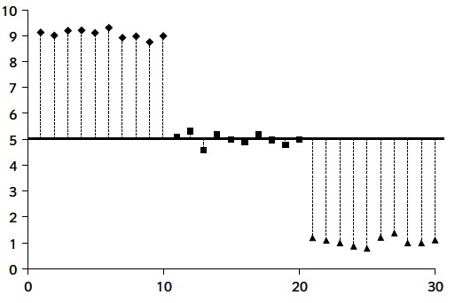

Tema 10 ANOVA
L’objectiu d’aquest tema és generalitzar el contrast bilateral de dues mitjanes emprant un test t a més de dues mitjanes, de tal manera que amb un sol test poguem decidir si hi ha evidència que alguna parella d’aquestes mitjanes siguin diferents o si pel contrari podem acceptar que totes les mitjanes són iguals.
10.1 Nocions bàsiques
Comencem considerant un problema concret.
Exemple 10.1 Es realitzà un estudi per investigar l’efecte del CO2 sobre la taxa de creixement de Pseudomonas fragi, un corruptor d’aliments. Per contrastar si el seu creixement es veu afectat per la quantitat de CO2 en l’aire, s’administrà CO2 a 5 pressions atmosfèriques diferents a 10 cultius diferents per cada nivell de pressió de CO2 i s’anotà el percentatge d’increment de la massa cel·lular de cada cultiu al cap d’una hora.
Les dades obtingudes varen ser: \[ \begin{array}{c} \text{Pressió de CO${}_2$ (en atmosferes)}\\ \begin{array}{rrrrr} 0.0 & 0.08 & 0.29 & 0.50 & 0.86 \\\hline 62.6 & 50.9 & 45.5 & 29.5 & 24.9 \\ 59.6 & 44.3 & 41.1 & 22.8 & 17.2 \\ 64.5 & 47.5 & 29.8 & 19.2 & 7.8 \\ 59.3 & 49.5 & 38.3 & 20.6 & 10.5 \\ 58.6 & 48.5 & 40.2 & 29.2 & 17.8 \\ 64.6 & 50.4 & 38.5 & 24.1 & 22.1 \\ 50.9 & 35.2 & 30.2 & 22.6 & 22.6 \\ 56.2 & 49.9 & 27.0 & 32.7 & 16.8 \\ 52.3 & 42.6 & 40.0 & 24.4 & 15.9 \\ 62.8 & 41.6 & 33.9 & 29.6 & 8.8 \end{array} \end{array} \]
El contrast que es volia realitzar era:
\(H_0\): El percentatge mitjà d’increment del volum cel·lular d’un cultiu de P. fragi al cap d’una hora és el mateix per a totes les pressions de CO2 considerades.
\(H_1\): El percentatge mitjà d’increment del volum cel·lular d’un cultiu de P. fragi al cap d’una hora depèn de la pressió de CO2.
que en el nostre experiment traduïm en:
\(H_1\): No és veritat que el percentatge mitjà d’increment del volum cel·lular d’un cultiu de P. fragi al cap d’una hora sigui el mateix per a totes les pressions de CO2 considerades.
És a dir:
\(H_1\): Hi ha almenys dues d’aquestes pressions de CO2 sota les quals els percentatges mitjans d’increment del volum cel·lular d’un cultiu de P. fragi al cap d’una hora són diferents.
Aquest experiment és un cas particular del problema següent:
Tenim \(k>2\) poblacions. Volem decidir si la mitjana d’una certa variable aleatòria és la mateixa a totes aquestes poblacions, o no.
Usualment, aquestes \(k\) poblacions seran subpoblacions d’una única població, definides pels nivells d’un o diversos factors. Per exemple, a l’estudi del creixement del P. fragi, les poblacions que consideram estan totes formades per cultius d’aquest bacteri, i es diferencien en la pressió de CO2.
En el context d’aquest tipus d’estudis, a aquests nivells els anomenam tractaments. És a dir, tornant a l’exemple anterior, els nivells de pressió de CO2 serien els tractaments que analitzam en aquest estudi.Per simplificar el llenguatge, sovint cometrem l’abús d’identificar una subpoblació d’aquestes amb el nivell, o tractament, que la defineix. D’aquesta manera, parlarem per exemple de
la mitjana poblacional del tractament “0.29 atmosferes”
per referir-nos a la mitjana de la població definida pel tractament “0.29 atmosferes”, és a dir, al percentatge mitjà d’increment del volum cel·lular en una hora d’un cultiu de P. fragi a 0.29 atmosferes de pressió de CO2. I parlarem de
la mitjana mostral del tractament “0.29 atmosferes”
per referir-nos a la mitjana de la nostra mostra de la població definida pel tractament “0.29 atmosferes”, és a dir, a la mitjana mostral dels percentatges d’increment del volum cel·lular dels cultius de P. fragi a 0.29 atmosferes obtinguts en aquest experiment.
Si diem \(\mu_1,\ldots,\mu_k\) a les mitjanes d’aquesta variable en aquestes \(k\) poblacions, la pregunta que ens plantejam correspon al contrast: \[ \left\{ \begin{array}{l} H_0 : \mu_1 =\mu_2 =\cdots =\mu_k \\ H_1 : \text{Hi ha }i,j\text{ tals que } \mu_i \neq\mu_j \end{array} \right. \]
Aleshores, prendrem una mostra aleatòria de cada població (una mostra estratificada de la població total, recordau?), i a partir d’aquestes mostres decidirem aquest contrast.
Exemple 10.2 Continuem amb el nostre Exemple 10.1. Per a cada \(\ell=0,0.08,0.29,0.50,0.86\), consideram la variable aleatòria
- \(X_\ell\): “Prenc un cultiu de P. fragi a \(\ell\) atmosferes de CO2 i mesur el percentatge de creixement del seu volum cel·lular en una hora”.
Volem realitzar el contrast \[ \left\{ \begin{array}{l} H_0 : \mu_0=\mu_{0.08}=\mu_{0.29}=\mu_{0.50}=\mu_{0.86} \\ H_1 : \text{No totes aquestes mitjanes són iguals} \end{array} \right. \]
En temes anteriors, per comparar les mitjanes d’una variable sobre dues poblacions, calculàvem les mitjanes de dues mostres i les comparàvem. Per comparar les mitjanes de \(k\geqslant 3\) poblacions, podríem fer-ho per parelles, però hauríem de fer \(\binom{k}{2}\) contrastos i això augmenta la probabilitat d’error. A més, les hem de comparar totes amb totes, perquè podria passar que no poguéssim rebutjar que \(\mu_1= \mu_2\) ni que \(\mu_2= \mu_3\) però en canvi sí que poguéssim rebutjar que \(\mu_1= \mu_3\).
El que volem és un test que ens digui en un sol pas si totes les mitjanes són iguals o no; si concloem que no, després ja cercarem quines mitjanes són diferents si volem saber-ho.
La tècnica més usual per efectuar aquest tipus de contrast és l’Anàlisi de la Variància o ANOVA (de l’anglès ANalysis Of VAriance; en llibres en castellà o català de vegades hi trobareu el terme ANDEVA, d’ANàlisi DE la VAriància, però no el farem servir, perquè trobam que sona més a marca de producte d’higiene íntima femenina que a tècnica estadística seriosa). L’ANOVA és tot un món, i té moltes variants segons el disseny de l’experiment que ha produït les dades:
Segons quants factors emprem per separar la població en subpoblacions
Segons com triem els nivells dels factors
Segons com prenguem les mostres
En aquest curs veurem els tres dissenys més bàsics:
L’ANOVA d’1 via, que generalitza el test t de dues mitjanes a partir de dues mostres independents a \(k\) mitjanes de poblacions definides pels nivells d’un únic factor, a partir de \(k\) mostres independents.
L’ANOVA de blocs, que generalitza el test t de dues mitjanes a partir de dues mostres aparellades a \(k\) mitjanes de poblacions definides pels nivells d’un únic factor, a partir de \(k\) mostres aparellades.
L’ANOVA de 2 vies, que generalitza el test t de dues mitjanes a partir de dues mostres independents a més de dues mitjanes de poblacions definides per les combinacions de nivells de dos factors, a partir de mostres independents.
L’estratègia per comparar les mitjanes de 3 o més poblacions serà fixar-nos en tres fonts de variabilitat, o dispersió, de les dades:
La variabilitat total de les dades
La variabilitat dins cada mostra
La variabilitat de les mitjanes mostrals
La idea és que si les mitjanes mostrals tenen molta variabilitat, ho prendrem com a senyal que les mitjanes poblacionals no poden ser totes iguals. Com ho mesurarem?
Amb definicions adients de les “variabilitats”, resultarà que
La variabilitat total de les dades és igual a la suma de la variabilitat de les mitjanes mostrals més la suma de les variabilitats dins les mostres.
Aleshores, la idea bàsica anterior es tradueix en:
Per exemple, si teniu molta variabilitat global

i molt poca dins cada tractament
serà evidència que les mitjanes poblacionals no són iguals.
Si en canvi teniu molta variabilitat global

però també molta dins cada tractament

no obtendrem evidència per rebutjar que les mitjanes poblacionals siguin totes tres iguals.
La pregunta és ara com quantificam aquestes variabilitats i com definim què significa “molt més gran”. Es tractarà de trobar un estadístic de contrast del qual en coneguem la distribució mostral si la hipòtesi nul·la és vertadera i que esperem que prengui un valor petit si la hipòtesi nul·la és vertadera.
10.2 ANOVA d’1 via
10.2.1 Contrast bàsic
La situació és la següent. Tenim una variable aleatòria \(X\) i un (únic) factor amb \(k\geqslant 3\) nivells (o tractaments). Aquests nivells classifiquen la població en \(k\) subpoblacions. Diguem \(\mu_i\) a la mitjana de \(X\) en els individus del nivell \(i\)-èsim. Volem comparar aquestes mitjanes \(\mu_1\),…,\(\mu_k\) i més en concret decidir si són totes iguals o no.
En un experiment de disseny d’ANOVA d’1 via (en anglès, 1 way; el motiu d’aquest nom és que empram una única “manera” de classificar la població, en anglès one way que també es tradueix per “una via”, i així ha quedat el nom en les nostres llengües):
S’empra un factor amb \(k>2\) nivells per classificar una població en subpoblacions.
Es pren una m.a.s. de cada subpoblació, de manera independent les unes de les altres, i es mesura la variable d’interès \(X\) sobre tots els subjectes de les mostres.
Per exemple, l’experiment del nostre Exemple 10.1 té disseny d’ANOVA d’1 via:
La variable \(X\) assigna a cada cultiu de P. fragi el seu percentatge d’increment cel·lular en una hora.
El factor emprat per classificar la població és la pressió de CO2: es consideren 5 nivells diferents, sota els quals es realitzen els cultius.
Cada \(X_\ell\) de l’Exemple 10.2 és la restricció de \(X\) a la subpoblació definida pel nivell \(\ell\): els cultius realitzats a \(\ell\) atmosferes de CO2.
S’hi ha pres una m.a.s. per a cada nivell de pressió \(\ell\), i de manera independent les unes de les altres.
Ja que hi som, anam a organitzar les dades d’aquest experiment de manera adient. Les emmagatzemarem en un dataframe que anomenarem CO2 amb dues variables:
- Inc: Percentatge d’increment de la massa cel·lular (al cap d’una hora); una variable numèrica
- Pre: Nivell de pressió, com a factor
Les dades eren:
\[ \begin{array}{c} \text{Pressió de CO${}_2$ (en atmosferes)}\\ \begin{array}{rrrrr} 0.0 & 0.08 & 0.29 & 0.50 & 0.86 \\\hline 62.6 & 50.9 & 45.5 & 29.5 & 24.9 \\ 59.6 & 44.3 & 41.1 & 22.8 & 17.2 \\ 64.5 & 47.5 & 29.8 & 19.2 & 7.8 \\ 59.3 & 49.5 & 38.3 & 20.6 & 10.5 \\ 58.6 & 48.5 & 40.2 & 29.2 & 17.8 \\ 64.6 & 50.4 & 38.5 & 24.1 & 22.1 \\ 50.9 & 35.2 & 30.2 & 22.6 & 22.6 \\ 56.2 & 49.9 & 27.0 & 32.7 & 16.8 \\ 52.3 & 42.6 & 40.0 & 24.4 & 15.9 \\ 62.8 & 41.6 & 33.9 & 29.6 & 8.8 \end{array} \end{array} \]
Entrarem els increments per fileres (és com és més fàcil copiar-los i aferrar-los), per tant el factor Pre ha d’estar format per 10 còpies consecutives del vector (0.0,0.08,0.29,0.50,0.86).
Inc=c(62.6,50.9,45.5,29.5,24.9,59.6,44.3,41.1,22.8,17.2,64.5,
47.5,29.8,19.2,7.8,59.3,49.5,38.3,20.6,10.5,58.6,48.5,
40.2,29.2,17.8,64.6,50.4,38.5,24.1,22.1,50.9,35.2,30.2,
22.6,22.6,56.2,49.9,27.0,32.7,16.8,52.3,42.6,40.0,24.4,
15.9,62.8,41.6,33.9,29.6,8.8)
Pre=as.factor(rep(c("0.0","0.08","0.29","0.50","0.86"), times=10))
CO2=data.frame(Inc,Pre)
str(CO2)## 'data.frame': 50 obs. of 2 variables:
## $ Inc: num 62.6 50.9 45.5 29.5 24.9 59.6 44.3 41.1 22.8 17.2 ...
## $ Pre: Factor w/ 5 levels "0.0","0.08","0.29",..: 1 2 3 4 5 1 2 3 4 5 ...head(CO2,7)## Inc Pre
## 1 62.6 0.0
## 2 50.9 0.08
## 3 45.5 0.29
## 4 29.5 0.50
## 5 24.9 0.86
## 6 59.6 0.0
## 7 44.3 0.08Veiem que hem definit del dataframe com toca. Donem ara una ullada a les dades. Primer un diagrama de punts de cada nivell de CO2 (amb només 10 valors per nivell, és més adient dibuixar-los tots que resumir-los en diagrames de caixes):
stripchart(Inc~Pre,data=CO2,xlab="Pressions",ylab="Increment",method="stack",
vertical=TRUE,pch=20,cex=0.75)
I ara un que mostri la variabilitat de les dades i les mitjanes com els del final de la secció anterior. Aquest gràfic normalment no el dibuixarem, simplement és per comparar-lo amb aquells gràfics. De totes formes, donam el codi per si qualque dia voleu produir un gràfic d’aquest estil.
# Els paràmetres generals
plot(1:50,c(CO2$Inc[CO2$Pre=="0.0"],CO2$Inc[CO2$Pre=="0.08"],CO2$Inc[CO2$Pre=="0.29"],CO2$Inc[CO2$Pre=="0.50"],CO2$Inc[CO2$Pre=="0.86"]),type="n",xlab="Número del cultiu",ylab="Increment")
# Els punts
points(1:10,CO2$Inc[CO2$Pre=="0.0"],pch=16,col="red")
points(11:20,CO2$Inc[CO2$Pre=="0.08"],pch=15,col="blue")
points(21:30,CO2$Inc[CO2$Pre=="0.29"],pch=17,col="green")
points(31:40,CO2$Inc[CO2$Pre=="0.50"],pch=19,col="brown2")
points(41:50,CO2$Inc[CO2$Pre=="0.86"],pch=18,col="brown")
# La mitjana mostral global
lines(c(0,50),c(mean(CO2$Inc),mean(CO2$Inc)),lwd=2)
text(5,34,"Mitjana global",cex=0.75)
# Les mitjanes mostrals de les mostres
lines(c(0,10),c(mean(CO2$Inc[CO2$Pre=="0.0"]),mean(CO2$Inc[CO2$Pre=="0.0"])),lwd=2,col="red")
lines(c(10,20),c(mean(CO2$Inc[CO2$Pre=="0.08"]),mean(CO2$Inc[CO2$Pre=="0.08"])),lwd=2,col="blue")
lines(c(20,30),c(mean(CO2$Inc[CO2$Pre=="0.29"]),mean(CO2$Inc[CO2$Pre=="0.29"])),lwd=2,col="green")
lines(c(30,40),c(mean(CO2$Inc[CO2$Pre=="0.50"]),mean(CO2$Inc[CO2$Pre=="0.50"])),lwd=2,col="brown2")
lines(c(40,50),c(mean(CO2$Inc[CO2$Pre=="0.86"]),mean(CO2$Inc[CO2$Pre=="0.86"])),lwd=2,col="brown")
text(20,mean(CO2$Inc[CO2$Pre=="0.0"]),"Mitjana del nivell 0.0",col="red",cex=0.75)
text(30,mean(CO2$Inc[CO2$Pre=="0.08"]),"Mitjana del nivell 0.083",col="blue",cex=0.75)
text(40,mean(CO2$Inc[CO2$Pre=="0.29"]+2),"Mitjana del nivell 0.29",col="green",cex=0.75)
text(20,mean(CO2$Inc[CO2$Pre=="0.50"]),"Mitjana del nivell 0.50",col="brown2",cex=0.75)
text(30,mean(CO2$Inc[CO2$Pre=="0.86"]),"Mitjana del nivell 0.86",col="brown",cex=0.75)
Veiem que hi ha una gran dispersió dins la mostra completa, no massa dispersió dins cada mostra per nivell, i les mitjanes mostrals per nivells són bastant diferents. Naturalment, fins que no fem una anàlisi estadística no sabrem si aquestes variabilitats i diferències són estadísticament significatives o no.
En un experiment amb disseny d’ANOVA d’1 via, disposarem les dades en una taula com la de l’Exemple anterior, amb les columnes representant els tractaments: \[ \begin{array}{c} \text{Tractaments}\\ \begin{array}{cccc} 1 & 2 &\ldots & k \\\hline X_{11} & X_{21} & \cdots & X_{k1} \\ X_{12} & X_{22} & \cdots & X_{k2} \\ \vdots & \vdots & \vdots & \vdots \\ \vdots & \vdots & \vdots & X_{kn_k} \\ X_{1n_1} & \vdots & \vdots & \\ & X_{2n_2} & & \\\hline \end{array} \end{array} \]
on
Cada \(n_i\) és la mida de la mostra del tractament \(i\); com hem intentat representar a la taula, aquestes \(n_i\) no tenen perquè ser totes iguals (però és convenient que ho siguin, perquè la potència d’un contrast ANOVA depèn del mínim d’aquestes \(n_i\)).
\(X_{ij}\) és el valor de la variable sota estudi al subjecte \(j\) del tractament \(i\).
\(N=n_1+\cdots+n_k\) és la mida total de la mostra.
ALERTA! Aquestes notacions no són les usuals a les matrius o a les taules de dades. Aquí, a \(X_{ij}\), \(i\) hi indica la columna i \(j\) la filera.
Observau també que a la taula de dades anterior no és veritat que cada filera representi un individu: en realitat cada columna pot tenir una alçada diferent. En aquesta taula cada \(X_{ij}\) representa un individu diferent.
Perquè es pugui realitzar un contrast ANOVA d’1 via, s’han de satisfer les condicions següents:
Les \(k\) mostres han de ser m.a.s. independents extretes de \(k\) poblacions específiques, amb mitjanes \(\mu_1,\ldots,\mu_k\)
\(N\geqslant k+1\) (alguna mostra ha de tenir més d’un subjecte)
Cadascuna de les \(k\) poblacions ha de seguir una llei normal
Homogeneïtat de les variàncies, o homocedasticitat: Totes aquestes poblacions han de tenir la mateixa variància, que indicarem amb \(\sigma^2\)
Donades diverses variables, hi tenim homocedasticitat quan totes tenen la mateixa variància, i heterocedasticitat quan no totes tenen la mateixa variància. Fixau-vos que ens referim a les variàncies de les poblacions, no de les mostres. Per exemple, les tres mostres del gràfic de l’esquerra següent provenen de variables normals amb la mateixa variància, representades al gràfic de la dreta: hi ha homocedasticitat:

En canvi, dues de les mostres del gràfic següent provenen de variables normals amb la mateixa variància, mentre que la tercera prové d’una normal amb una variància molt més gran: hi ha heterocedasticitat:

Diguem \(\mu\) a la mitjana poblacional de la població global (sense tenir en compte la classificació donada pels tractaments). Recordau que la hipòtesi nul·la del contrast que volem realitzar és \[ H_0: \mu_1=\cdots=\mu_k \] Si és vertadera, aleshores en realitat passarà que \[ \mu_1=\cdots=\mu_k=\mu \] perquè si totes les subpoblacions tenen la mateixa mitjana, aquesta mitjana comuna serà la mitjana de tota la població.
En aquest tema és el primer cop que tenim ocasió de parlar de models estadístics. Informalment, un model no és res més que una descripció matemàtica del comportament d’una o vàries variables aleatòries sobre una població. Aquests models inclouen assumpcions sobre la població que poden ser veritat o no, i que si no ho són aleshores les conclusions de l’anàlisi estadística que fem basant-nos en aquest model no tendran cap sentit.
En concret, l’ANOVA d’1 via es basa en el model següent: per a cada \(i=1,\ldots,k\), \[ X_i=\mu+(\mu_i-\mu)+(X_i-\mu_i) \] on:
\(X_i\) representa el valor de la variable \(X\) sobre un individu del nivell \(i\)-èsim.
\(\mu_i-\mu\) representa la desviació de la mitjana de \(X\) en el nivell \(i\)-èsim respecte de la mitjana global \(\mu\); en direm l’efecte del tractament \(i\)-èsim i representa la contribució al valor de \(X\) sobre un individu del nivell \(i\)-èsim del fet de pertànyer a aquest nivell.
\(X_i-\mu_i\), la desviació de la variable \(X\) sobre un individu del nivell \(i\)-èsim respecte de la mitjana d’aquest nivell, \(\mu_i\), representa el component aleatori en una medició concreta de \(X\) sobre un individu del nivell \(i\)-èsim, és a dir, “la part de la diferència entre \(X_{i}\) i \(\mu\) que no explica el tractament”; en diem l’error aleatori, o el residu.
Fixau-vos que, formalment, la fórmula que descriu aquest model és sempre vertadera: podeu simplificar les \(\mu_i\) i les \(\mu\) de la dreta. Però el que diu aquest model és que el valor de \(X\) sobre un individu és la suma de tres components:
- La mitjana global
- L’efecte del tractament
- L’error aleatori
i en particular que res més no influeix en el valor de \(X\) sobre un individu. Per tant, si això no és cert, és a dir, si aquest valor pot dependre d’altres efectes que no tinguem en compte, el model no és vàlid, i les conclusions de l’ANOVA tampoc.
Passem ara a la mostra amb què volem realitzar el contrast. Siguin:
\(\overline{X}_{i}\): La mitjana mostral de la mostra del tractament \(i\)-èsim: \[ \overline{X}_{i} = \frac{\sum_{j=1}^{n_i} X_{ij}}{n_i} \] Estima la mitjana \(\mu_i\) de la subpoblació definida pel tractament \(i\)-èsim.
\(\overline{X}\): La mitjana mostral de tota la mostra: \[ \overline{X}=\frac{\sum_{i=1}^k \sum_{j=1}^{n_i} X_{ij}}{N} \] Estima la mitjana \(\mu\) de la població global.
Es té la identitat següent:
Teorema 10.1 (Identitat de les sumes de quadrats) \[ SS_{Total}=SS_{Tr}+SS_E \] on
\(SS_{Total}=\displaystyle\sum_{i=1}^k\sum_{j=1}^{n_i} (X_{ij}-\overline{X})^2\); és la Suma Total de Quadrats.
\(SS_{Tr}=\displaystyle\sum_{i=1}^k n_i(\overline{X}_{i}-\overline{X})^2\); és la Suma de Quadrats dels Tractaments.
\(SS_E=\displaystyle\sum_{i=1}^k\sum_{j=1}^{n_i} (X_{ij}-\overline{X}_{i})^2\); és la Suma de Quadrats dels Residus o dels Errors.
Fixau-vos que
\(SS_{Total}\) representa la variabilitat total de les dades: de fet, és el numerador de la variància de la mostra total.
\(SS_{Tr}\) representa la variabilitat de les mitjanes mostrals: és el numerador de la variància d’un vector format per \(n_1\) còpies de \(\overline{X}_1\), \(n_2\) còpies de \(\overline{X}_2\), … i \(n_k\) còpies de \(\overline{X}_k\).
\(SS_E\) representa la suma de les variabilitats de les dades de la mostra de cada tractament: és la suma dels numeradors de les variàncies de les \(k\) mostres dels diferents tractaments.
\(SS_{Total}=SS_{Tr}+SS_E\) diu que la variabilitat total de la mostra descompon en la suma de la variabilitat de les mitjanes i la suma de les variabilitats de les mostres de cada tractament.
str(CO2)## 'data.frame': 50 obs. of 2 variables:
## $ Inc: num 62.6 50.9 45.5 29.5 24.9 59.6 44.3 41.1 22.8 17.2 ...
## $ Pre: Factor w/ 5 levels "0.0","0.08","0.29",..: 1 2 3 4 5 1 2 3 4 5 ...Aleshores:
- Les mitjanes mostrals dels tractaments, \(\overline{X}_{i}\), es calculen amb
mitjanes.tracts=aggregate(Inc~Pre,data=CO2,mean)
mitjanes.tracts## Pre Inc
## 1 0.0 59.14
## 2 0.08 46.04
## 3 0.29 36.45
## 4 0.50 25.47
## 5 0.86 16.44- La mitjana mostral global, \(\overline{X}\), és:
mitjana.total=mean(CO2$Inc)
mitjana.total## [1] 36.708- La \(SS_{Total}=\displaystyle\sum_{i=1}^k\sum_{j=1}^{n_i} (X_{ij}-\overline{X})^2\) és
SSTotal=sum((CO2$Inc-mitjana.total)^2)
SSTotal## [1] 12522.36- Per calcular
\[
SS_{Tr}=\displaystyle\sum_{i=1}^k n_i(\overline{X}_{i}-\overline{X})^2
\]
hem d’observar que les mitjanes \(\overline{X}_{i}\) formen la variable Inc del dataframe
mitjanes.tracts
mitjanes.tracts$Inc## [1] 59.14 46.04 36.45 25.47 16.44i els \(n_i\) són les freqüències absolutes de cada nivell dins la variable CO2$Pre
table(CO2$Pre)##
## 0.0 0.08 0.29 0.50 0.86
## 10 10 10 10 10Per tant la fórmula que defineix \(SS_{Tr}\) se tradueix en
SSTr=sum(table(CO2$Pre)*(mitjanes.tracts$Inc-mitjana.total)^2)
SSTr## [1] 11274.32- Per calcular
\[
SS_E=\displaystyle\sum_{i=1}^k\sum_{j=1}^{n_i} (X_{ij}-\overline{X}_{i})^2
\]
podem fixar-nos que, tal i com hem construït el dataframe CO2, les entrades de
CO2$Incque difereixen en un múltiple de 5 són del mateix tractament; per exemple, les entrades que corresponen a pressió 0 són la 1a, la 6a, la 11a etc.; les entrades que corresponen a pressió 0.83 són la 2a, la 7a, la 12a etc.; i així successivament. Per tant, si femCO2$Inc-mitjanes.tracts$Inc, com que la longitud deCO2$Incés 10 vegades la demitjanes.tracts$Inc, el que estarem dient és que aCO2$Incse li resti un vector format per 10 còpies consecutives demitjanes.tracts$Inc, i d’aquesta manera justament a cada entrada deCO2$Incse li restarà l’entrada demitjanes.tracts$Incque conté la mitjana del seu tractament. Per tant, \(SS_E\) es pot calcular amb
SSE=sum((CO2$Inc-mitjanes.tracts$Inc)^2)
SSE## [1] 1248.038Si no estau còmodes amb això de restar vectors de longituds una un múltiple de l’altra, el que heu de fer és restar a CO2$Inc un vector format per 10 còpies consecutives de mitjanes.tracts$Inc:
SSEalt=sum((CO2$Inc-rep(mitjanes.tracts$Inc,times=10))^2)
SSEalt## [1] 1248.038Comprovem la identitat de les sumes de quadrats:
SSTotal## [1] 12522.36SSTr+SSE## [1] 12522.36La idea del contrast ANOVA és que
Rebutjam la hipòtesi nul·la si \(SS_{Tr}\) és molt gran.
Per la identitat de les sumes de quadrats \(SS_{Total}=SS_{Tr}+SS_E\), això ho podem traduir en
Rebutjam la hipòtesi nul·la si \(SS_{Total}\) és molt més gran que \(SS_E\).
I això en realitat ho traduïm en
Rebutjam la hipòtesi nul·la si \(SS_{Tr}\) és molt més gran que \(SS_E\).
Per mesurar-ho emprarem els estadístics següents:
- Quadrat mitjà dels tractaments: \[ MS_{Tr}=\frac{SS_{Tr}}{k-1} \]
- Quadrat mitjà residual: \[ MS_E=\frac{SS_E}{N-k} \]
Aquests estadístics són variables aleatòries, i sota les condicions necessàries per poder fer una ANOVA (mostres aleatòries simples independents, variable poblacional normal per a cada tractament i totes amb la mateixa variància, que indicarem amb \(\sigma^2\)), satisfan que:
\(E(MS_{Tr})=\displaystyle\sigma^2 + \sum_{i=1}^k \frac{n_i (\mu_i-\mu)^2}{k-1}\)
\(E(MS_E)=\sigma^2\)
Ara, si \(H_0:\mu_1=\cdots=\mu_k (=\mu)\) és certa, \[ \sum_{i=1}^k \frac{n_i (\mu_i -\mu)^2}{k-1}=0, \] i si \(H_0\) no és certa, aquesta quantitat és \(>0\).
Per tant
Si \(H_0\) és certa, \(E(MS_E)=E(MS_{Tr})\) i per tant hauríem d’esperar que aquests dos estadístics prenguessin valors propers, és a dir, hauríem d’esperar que \[ \frac{MS_{Tr}}{MS_E}\approx 1 \]
Si \(H_0\) és falsa, \(E(MS_E)<E(MS_{Tr})\) i hauríem d’esperar que \(MS_{Tr}\) donàs valors més grans que \(MS_E\), és a dir, hauríem d’esperar que \[ \frac{MS_{Tr}}{MS_E}> 1 \]
Aleshores, prenem com a estadístic de contrast el quocient \[ F=\frac{MS_{Tr}}{MS_E} \] el qual satisfà la propietat següent.
Teorema 10.2 Sota les condicions necessàries per poder realitzar una ANOVA i si \(H_0:\mu_1=\cdots=\mu_k\) és certa,
La variable F té distribució F de Fisher amb \(k-1\) i \(N-k\) graus de llibertat, \(F_{k-1,N-k}\).
El seu valor és proper a 1.
Per tant, en una ANOVA rebutjarem la hipòtesi nul·la si el valor \(F_0\) de F obtingut sobre la nostra mostra és molt gran. Això ho traduirem en que rebutjarem la hipòtesi nul·la si la probabilitat que F sigui més gran que \(F_0\) és petita, i aquesta probabilitat serà el p-valor del contrast.
En resum, per realitzar una ANOVA d’1 via a partir d’una mostra:
Calculam les sumes de quadrats \[ SS_{Tr},\ SS_E \]
Calculam els quadrats mitjans \[ MS_{Tr}=\frac{SS_{Tr}}{k-1},\ MS_E=\frac{SS_E}{N-k} \]
Calculam el valor de l’estadístic de contrast \[ F_0=\frac{MS_{Tr}}{MS_E} \]
Calculam el p-valor \[ P(F_{k-1,N-k}\geqslant F_0) \]
Si el p-valor és més petit que el nivell de significació \(\alpha\), rebutjam \(H_0\) i concloem que no totes les mitjanes són iguals. En cas contrari, acceptam que totes les mitjanes són iguals.
Exemple 10.4 Continuem amb el nostre Exemple 10.1.
Ja sabem que \(N=50\), \(k=5\), \(SS_{Total}=12522.36\), \(SS_{Tr}=11274.32\) i \(SS_E=1248.038\).
Els quadrats mitjans són:
N=50
k=5
MSTr=SSTr/(k-1)
MSTr## [1] 2818.58MSE=SSE/(N-k)
MSE## [1] 27.73418- L’estadístic de contrast val:
F0=MSTr/MSE
F0## [1] 101.6284- El p-valor \(P(F_{k-1,N-k}\geqslant F_0)\) val
1-pf(F0,k-1,N-k)## [1] 0Conclusió: Hem trobat evidència estadística que el nivell de pressió de CO2 influeix en el creixement mitjà del microorganisme Pseudomonas fragi (ANOVA, p-valor 0).
Un contrast ANOVA d’1 via se sol resumir en la taula ANOVA següent: \[ \begin{array}{llllll} \hline \text{Origen de la}&\text{Graus de}&\text{Sumes de}&\text{Quadrats} & \text{Estadístic de}&\text{p-valor}\\[-0.5ex] \text{variabilitat}&\text{llibertat}&\text{quadrats}&\text{mitjans}&\text{contrast} & \\\hline \text{Tractaments} & k-1 & SS_{Tr}& MS_{Tr} & F & \text{p-valor} \\ \text{Residus} & N-k & SS_E & MS_E & \\\hline \end{array} \]
Així, la taula de l’ANOVA de l’Exemple 10.1 és \[ \begin{array}{llllll} \hline \text{Origen de la}&\text{Graus de}&\text{Sumes de}&\text{Quadrats} & \text{Estadístic de}&\text{p-valor}\\[-0.5ex] \text{variabilitat}&\text{llibertat}&\text{quadrats}&\text{mitjans}&\text{contrast} & \\\hline \text{Tractaments} & 4 & 11274.32& 2818.58 & 101.63 & 0 \\ \text{Residus} & 45 & 1248.04 & 27.73 & \\\hline \end{array} \]
En aquesta taula, a banda de l’estadístic de contrast i el p-valor, ens pot interessar el valor del \(MS_E\), que estima la variància comuna de tots els tractaments. En el nostre exemple, (si se satisfan les condicions per poder efectuar una ANOVA d’1 via) estimam que les variables que ens donen els percentatges d’increment en 1 hora de les poblacions de P. fragi sota les diferents pressions de CO2 considerades tenen totes variància (poblacional) 27.73.
Vegem un altre exemple.
Exemple 10.5 Disposam de quatre tractaments genètics diferents, numerats de l’1 al 4, per corregir un cert gen defectuós responsable d’una malaltia. Els investigadors volen saber si els quatre tractaments tenen una eficàcia similar o no. Per contrastar-ho, en un assaig clínic es varen prendre 20 pacients amb aquesta malaltia, els repartiren aleatòriament en 4 grups de 5 malalts cadascun, i assignaren de forma aleatòria un dels quatre tractaments a cada grup. Després d’aplicar el tractament, es va mesurar a cada pacient l’expressió del gen defectuós sota estudi.
Les dades obtingudes varen ser
\[ \begin{array}{c} \text{Tractament}\\ \begin{array}{llll} 1 & 2 & 3 & 4 \\ \hline 96 & 93 & 70 & 78 \\ 99 & 90 & 90 & 87 \\ 100 & 75 & 84 & 57 \\ 104 & 80 & 76 & 66 \\ 84 & 90 & 78 & 76 \end{array} \end{array} \]
Aquest experiment té disseny d’ANOVA d’1 via:
La variable \(X\) és “Prenc un individu amb aquest gen defectuós i mesur l’expressió del gen” (aquí es quantificà per mitjà de la quantitat de mRNA en una mostra biològica mesurada amb un Northern blot, no entrarem en més detall).
El factor emprat per classificar les expressions té com a nivells els 4 tractaments objecte d’estudi.
S’hi ha pres una m.a.s. per a cada tractament, i de manera independent les unes de les altres.
Els resultats parcials us haurien de donar:
\(N=20\), \(k=4\),
Les mitjanes: \(\overline{X}_{1}=96.6\), \(\overline{X}_{2}=85.6\), \(\overline{X}_{3}=79.6\), \(\overline{X}_{4}=72.8\), \(\overline{X}=83.65\)
Les sumes de quadrats: \(SS_{Total}=2766.55\), \(SS_{Tr}=1528.15\), \(SS_E=1238.4\)
Els quadrats mitjans: \(MS_{Tr}=509.4\), \(MS_{E}=77.4\)
L’estadístic de contrast, \(F_0=6.6\)
El p-valor: \(P(F_{3,16}>6.6)=\texttt{1-pf(6.6,3,16)}=0.004\)
La taula de l’ANOVA \[ \begin{array}{llllll} \hline \text{Origen de la}&\text{Graus de}&\text{Sumes de}&\text{Quadrats} & \text{Estadístic de}&\text{p-valor}\\[-0.5ex] \text{variabilitat}&\text{llibertat}&\text{quadrats}&\text{mitjans}&\text{contrast} & \\\hline \text{Tractaments} & 3& 1528.15 & 509.4 & 6.6 & 0.004 \\ \text{Residus} & 16 & 1238.4 & 77.4 & \\\hline \end{array} \]
Conclusió: Hem trobat evidència estadística que les quatre teràpies no tenen totes la mateixa eficàcia mitjana (ANOVA, p-valor 0.004).
10.2.2 Amb R
Per realitzar una ANOVA, s’aplica la funció
summary(aov( ))a la fórmula que separa les dades numèriques segons els nivells del factor (ha de ser un factor o, a partir de la versió 4.0 de R, un vector de paraules). Si la fórmula només especifica els noms de les variables, s’hi ha d’indicar el nom del dataframe amb el paràmetre data.
Per exemple, l’ANOVA de l’Exemple 10.1 s’obté amb
summary(aov(CO2$Inc~CO2$Pre))## Df Sum Sq Mean Sq F value Pr(>F)
## CO2$Pre 4 11274 2818.6 101.6 <2e-16 ***
## Residuals 45 1248 27.7
## ---
## Signif. codes: 0 '***' 0.001 '**' 0.01 '*' 0.05 '.' 0.1 ' ' 1o, equivalentment, amb
summary(aov(Inc~Pre,data=CO2))## Df Sum Sq Mean Sq F value Pr(>F)
## Pre 4 11274 2818.6 101.6 <2e-16 ***
## Residuals 45 1248 27.7
## ---
## Signif. codes: 0 '***' 0.001 '**' 0.01 '*' 0.05 '.' 0.1 ' ' 1D’aquesta manera obtenim la taula de l’ANOVA que hem explicat fa una estona. La primera filera, Pre, correspon als tractaments, que són els nivells del factor Pre de CO2. El valor de Pr(> F) és el p-valor del contrast.
Exemple 10.6 Per realitzar l’ANOVA de l’Exemple 10.5, primer hem d’entrar les dades en un dataframe. Un altre cop, entrarem les dades per fileres i per tant els indicadors dels tractaments s’han d’entrar com el vector (1,2,3,4) repetit 5 vegades.
Expr=c(96,93,70,78,99,90,90,87,100,75,84,57,104,80,76,66,84,90,78,76)
Tract=rep(1:4,5)
EG=data.frame(Expr,Tract)
str(EG)## 'data.frame': 20 obs. of 2 variables:
## $ Expr : num 96 93 70 78 99 90 90 87 100 75 ...
## $ Tract: int 1 2 3 4 1 2 3 4 1 2 ...summary(aov(Expr~Tract,data=EG))## Df Sum Sq Mean Sq F value Pr(>F)
## Tract 1 1498 1497.7 21.25 0.000218 ***
## Residuals 18 1269 70.5
## ---
## Signif. codes: 0 '***' 0.001 '**' 0.01 '*' 0.05 '.' 0.1 ' ' 1No ha donat el mateix p-valor que quan l’hem fet a mà!

Va, tornem a començar i ara fem-ho bé:
Expr=c(96,93,70,78,99,90,90,87,100,75,84,57,104,80,76,66,84,90,78,76)
Tract=as.factor(rep(1:4,5))
EG=data.frame(Expr,Tract)
str(EG)## 'data.frame': 20 obs. of 2 variables:
## $ Expr : num 96 93 70 78 99 90 90 87 100 75 ...
## $ Tract: Factor w/ 4 levels "1","2","3","4": 1 2 3 4 1 2 3 4 1 2 ...head(EG)## Expr Tract
## 1 96 1
## 2 93 2
## 3 70 3
## 4 78 4
## 5 99 1
## 6 90 2summary(aov(Expr~Tract,data=EG))## Df Sum Sq Mean Sq F value Pr(>F)
## Tract 3 1528 509.4 6.581 0.00417 **
## Residuals 16 1238 77.4
## ---
## Signif. codes: 0 '***' 0.001 '**' 0.01 '*' 0.05 '.' 0.1 ' ' 1Ara sí que hem obtingut el mateix.
10.2.3 Comparacions posteriors per parelles
Si hem rebutjat la hipòtesi nul·la \(H_0:\mu_1=\cdots =\mu_k\), podem demanar-nos quins són els tractaments que donen mitjanes diferents. Això es pot fer de diverses maneres, aquí veurem la més “òbvia”: comparar totes les parelles de mitjanes per mitjà de tests t. És a dir, per a cada parell de tractaments, realitzar el contrast \[ \left\{ \begin{array}{l} H_0 : \mu_i=\mu_j \\ H_1 : \mu_i\neq\mu_j \end{array} \right. \] L’estadístic que fem servir en cada un d’aquests contrastos és ara \[ T=\frac{\overline{X}_{i} - \overline{X}_{j}}{\sqrt{{MS_E}\cdot (\frac{1}{n_i} +\frac{1}{n_j})}} \] que, si la hipòtesi nul·la d’aquest contrast és vertadera, segueix una distribució \(t\) de Student amb \(N-k\) graus de llibertat, \(t_{N-k}\).
Tots aquests contrastos per parelles serien tests t amb mostres independents i la mateixa variància. Per ventura alguns recordeu que la fórmula que us hem explicat al tema de Contrastos paramètrics per a aquests tests no és aquesta, sinó \[ T=\frac{\overline{X}_i-\overline{X}_j}{\sqrt{ \frac{(n_i-1)\widetilde{S}_i^2+(n_j-1)\widetilde{S}_j^2}{n_i+n_j-2}\cdot \Big(\frac{1}{n_i}+\frac{1}{n_j}\Big)}} \] que, si \(\mu_i=\mu_j\) és vertadera, té distribució \(t_{n_i+n_j-2}\). En aquesta fórmula, el factor \[ \frac{(n_i-1)\widetilde{S}_i^2+(n_j-1)\widetilde{S}_j^2}{n_i+n_j-2} \] dins l’arrel quadrada del denominador estima la variància comuna de \(X_i\) i \(X_j\).
Però en una ANOVA tenim més dades (les mostres de tots els tractaments, no només d’una parella) i les podem emprar totes per estimar la variància comuna de tots els tractaments. Com ja hem dit quan parlàvem de la distribució dels Quadrats Mitjans, aquesta estimació és \(MS_E\), que és el que apareix ara dins l’arrel quadrada del denominador. I com que hem emprat totes les dades que tenim per estimar aquesta variància, i no només les de dues mostres, també canvia el nombre de graus de llibertat.
El p-valor de cada contrast serà \(2P(t_{N-k}\geqslant |t_{i,j}|)\), on \(t_{i,j}\) és el valor que hi pren aquest estadístic \(T\).
Ara bé, observau que d’aquesta manera realitzam \(\binom{k}{2}\) contrastos. Com més contrastos fem, més probabilitat tenim d’equivocar-nos.
Per exemple, a l’Exemple 10.1, si realitzam els \(c=\binom{5}{2}=10\) contrastos (totes les pressions contra totes les pressions) amb nivell de significació \(\alpha =0.05\), la probabilitat de cometre almenys un Error de Tipus I a qualcun (si totes les mitjanes fossin iguals en la realitat) és \(1-(1-0.05)^{10} \approx 0.4\).
Per tant, haurem de reduir el nivell de significació de cada contrast perquè la probabilitat global de cometre qualque Error de Tipus I sigui \(\alpha\). O, equivalentment, augmentar (se’n diu ajustar) el p-valor de cada contrast abans de comparar-lo amb l’\(\alpha\) global fixat.
Tot seguit explicam dos mètodes d’ajust de p-valors.
10.2.3.1 Mètode de Bonferroni
El mètode d’ajust de p-valors més popular és el de Bonferroni. Emprant que \(1-(1-x)^c \leqslant c\cdot x\), si volem efectuar \(c\) contrastos amb nivell de significació (global) \(\alpha\),
realitzam cada contrast amb nivell de significació \(\alpha/c\)
i així el nivell de significació global segur que serà menor o igual que \(c\cdot \alpha/c=\alpha\). O, equivalentment
multiplicam el p-valor de cada contrast per \(c\) abans de comparar-lo amb el nivell de significació \(\alpha\).
Les dues accions són equivalents, perquè \[ p<\alpha/c \Longleftrightarrow c\cdot p<\alpha \]
Exemple 10.7 A l’Exemple 10.1, si realitzam els 10 contrastos per parelles, per obtenir un nivell de significació global \(\alpha =0.05\) amb el mètode de Bonferroni,
- Hem de efectuar cada contrast amb nivell de significació 0.05/10=0.005
o equivalentment
- Hem de multiplicar cada p-valor per 10 i comparar-los amb 0.05.
A l’Exemple 2, si realitzam els 6 contrastos de totes les parelles possibles, per obtenir un nivell de significació global \(\alpha =0.05\),
- Hem de efectuar cada contrast amb nivell de significació 0.05/6=0.0083
o equivalentment
Hem de multiplicar cada p-valor per 6.
Amb R, per calcular tots els p-valors de cop (sense ajustar) podem emprar la funció
pairwise.t.test(variable numèrica, factor, p.adjust.method="none")El resultat d’un pairwise.t.test dóna el triangle inferior de la matriu dels p-valors: l’entrada \((i,j)\) correspon al contrast de mitjanes del nivell \(i\)-èsim i el nivell \(j\)-èsim.
Per calcular tots els p-valors ajustats amb qualque mètode, s’ha d’especificar al paràmetre p.adjust.method. Per exemple, per ajustar-los amb el mètode de Bonferroni, s’hauria d’entrar p.adjust.method="bonferroni" (fixau-vos que bonferroni hi va entre cometes i començant amb minúscula).
Exemple 10.8 Tornem a l’Exemple 10.5.
- Per obtenir tots els p-valors sense ajustar, els quals després nosaltres haurem de comparar amb \(\alpha/6\), executam
pairwise.t.test(EG$Expr,EG$Tract, p.adjust.method="none")##
## Pairwise comparisons using t tests with pooled SD
##
## data: EG$Expr and EG$Tract
##
## 1 2 3
## 2 0.06554 - -
## 3 0.00756 0.29688 -
## 4 0.00058 0.03522 0.23937
##
## P value adjustment method: noneLa primera entrada d’aquest resultat, 0.06554, és el p-valor sense ajustar del contrast de \(\mu_2\) contra \(\mu_1\); el 0.00756 és el p-valor sense ajustar del contrast de \(\mu_3\) contra \(\mu_1\); etc.
- Per obtenir tots els p-valors ajustats segons Bonferroni, que després nosaltres haurem de comparar amb \(\alpha\), entram
pairwise.t.test(EG$Expr,EG$Tract,p.adjust.method="bonferroni")##
## Pairwise comparisons using t tests with pooled SD
##
## data: EG$Expr and EG$Tract
##
## 1 2 3
## 2 0.3933 - -
## 3 0.0453 1.0000 -
## 4 0.0035 0.2113 1.0000
##
## P value adjustment method: bonferroniPodeu comprovar que els p-valors d’aquest segon resultat són els del primer resultat multiplicats per 6 (llevat d’arrodoniments i dels 1 que poden representar resultats més grans que 1).
Suposem que fixam el nivell de significació global usual \(\alpha=0.05\). En la primera execució de pairwise.t.test, els únics p-valors per davall de \(0.05/6=0.0083\) han estat els dels parells (1,3) i (1,4).
En la segona, els únics p-valors per davall de 0.05 han estat també els dels parells (1,3) i (1,4). Casualitat? És clar que no! Les conclusions havien de coincidir, perquè les dues tècniques són equivalents.
Conclusió: Hem trobat evidència estadística que la teràpia 1 té una eficàcia mitjana diferent de la de les teràpies 3 i 4 (ANOVA d’1 via, test posterior de Bonferroni, p-valors 0.0453 i 0.0035, respectivament), i no n’hem trobat de cap altra diferència.
10.2.3.2 Mètode de Holm
Un altre mètode popular d’ajust de p-valors, més potent que el de Bonferroni, i que de fet és el mètode que empra R per defecte és el mètode de Holm, que funciona bàsicament de la forma següent:
Siguin \(C_{1},\ldots ,C_{c}\) els contrastos per parelles que es volen realitzar i \(p_{1},\ldots ,p_{c}\) els p-valors corresponents.
Ordenam aquests p-valors en ordre creixent \(p_{(1)}< \cdots< p_{(c)}\) i re-enumeram consistentment els contrastos \(C_{(1)},\ldots, C_{(c)}\).
Per a cada \(j=1,\ldots,c\), calculam el p-valor ajustat \(\widetilde{p}_{(j)}=(c+1-j)\cdot p_{(j)}\).
Aleshores rebutjam la hipòtesi nul·la als contrastos \(C_{(j)}\) on \(\widetilde{p}_{(j)}<\alpha\).
Exemple 10.9 Anem a fer a mà l’ajust dels p-valors segons Holm a l’Exemple 10.5.
La taula amb els p-valors dels contrastos és: \[ \begin{array}{c|c} \text{Contrast} & \text{p-valor} \\ \hline \text{1-2} & 0.06554\\ \text{1-3} & 0.00756\\ \text{1-4} & 0.00058\\ \text{2-3} &0.29688\\ \text{2-4} & 0.03522\\ \text{3-4} & 0.23937 \end{array} \]
Ordenam en ordre creixent del p-valor:
\[ \begin{array}{c|c} \text{Contrast} & \text{p-valor} \\ \hline \text{1-4} & 0.00058\\ \text{2-3} & 0.00756\\ \text{2-4} & 0.03522\\ \text{1-2} & 0.06554\\ \text{3-4} & 0.23937\\ \text{2-3} &0.29688\\ \end{array} \]
- Ajustam, multiplicant, per a cada \(j\), el \(j\)-èsim p-valor (en ordre decreixent) per \(6+1-j\):
\[ \begin{array}{c|cc} \text{Contrast} & \text{p-valor} & \text{p-valor ajustat}\\ \hline \text{1-4} & 0.00058 & 6\times 0.00058 = 0.00348\\ \text{1-3} & 0.00756 & 5\times 0.00756 = 0.03780\\ \text{2-4} & 0.03522 & 4\times 0.03522 = 0.14088\\ \text{1-2} & 0.06554 & 3\times 0.06554 = 0.19662\\ \text{3-4} & 0.23937 & 2\times 0.23937 = 0.47874\\ \text{2-3} & 0.29688 & 1\times 0.29688 = 0.29688\\ \end{array} \]
- Comparam els p-valors ajustats amb \(\alpha\). En aquest cas, amb \(\alpha=0.05\) arribam a la mateixa conclusió que amb el mètode de Bonferroni: concloem que \(\mu_1\neq \mu_4\) i \(\mu_1\neq \mu_3\) i que no podem rebutjar que les altres parelles de mitjanes siguin iguals.
Amb R, s’ha d’especificar a la funció pairwise.t.test el paràmetre p.adjust.method="holm", o no especificar aquest paràmetre perquè “holm” és el valor per defecte de p.adjust.method.
pairwise.t.test(EG$Expr,EG$Tract,p.adjust.method="holm")##
## Pairwise comparisons using t tests with pooled SD
##
## data: EG$Expr and EG$Tract
##
## 1 2 3
## 2 0.1966 - -
## 3 0.0378 0.4787 -
## 4 0.0035 0.1409 0.4787
##
## P value adjustment method: holmExemple 10.10 Els tests posteriors per parelles de l’Exemple 10.1 amb el mètode de Bonferroni i de Holm són:
pairwise.t.test(CO2$Inc,CO2$Pre,p.adjust.method="bonferroni")##
## Pairwise comparisons using t tests with pooled SD
##
## data: CO2$Inc and CO2$Pre
##
## 0.0 0.08 0.29 0.50
## 0.08 1.4e-05 - - -
## 0.29 1.6e-11 0.00186 - -
## 0.50 < 2e-16 3.0e-10 0.00028 -
## 0.86 < 2e-16 2.5e-15 6.6e-10 0.00389
##
## P value adjustment method: bonferronipairwise.t.test(CO2$Inc,CO2$Pre,p.adjust.method="holm")##
## Pairwise comparisons using t tests with pooled SD
##
## data: CO2$Inc and CO2$Pre
##
## 0.0 0.08 0.29 0.50
## 0.08 5.6e-06 - - -
## 0.29 1.2e-11 0.00037 - -
## 0.50 < 2e-16 1.8e-10 8.4e-05 -
## 0.86 < 2e-16 2.0e-15 3.3e-10 0.00039
##
## P value adjustment method: holmConclusió: Hem trobat evidència estadística que cada una de les diferents pressions de CO2 considerades dona lloc a un increment mitjà diferent del volum cel·lular de P. fragi al cap d’una hora (ANOVA d’1 via, test posterior de Holm, p-valors ajustats < 0.0004).
10.2.4 Comprovació de les condicions
Recordau que perquè la conclusió d’una ANOVA d’1 via tengui sentit:
Les mostres de cada tractament han de ser aleatòries simples i independents i almenys una ha de tenir més d’un element.
La població definida per cada tractament ha de ser normal.
Totes aquestes poblacions han de tenir la mateixa variància (homocedasticitat).
El punt (1) és responsabilitat de l’investigador, però (2) i (3) s’han de contrastar. Si fallen, sobretot si falla (3), no es pot usar una ANOVA: convé emprar un test no paramètric.
La normalitat de les mostres s’ha de contrastar amb algun test de normalitat. Per exemple, emprarem el test de Shapiro-Wilks per contrastar la normalitat dels nostre exemple de creixement del volum cel·lular de P. fragi:
shapiro.test(CO2$Inc[CO2$Pre=="0.0"])$p.value## [1] 0.320568shapiro.test(CO2$Inc[CO2$Pre=="0.08"])$p.value## [1] 0.1023687shapiro.test(CO2$Inc[CO2$Pre=="0.29"])$p.value## [1] 0.5197501shapiro.test(CO2$Inc[CO2$Pre=="0.50"])$p.value## [1] 0.465208shapiro.test(CO2$Inc[CO2$Pre=="0.86"])$p.value## [1] 0.4840276Podem acceptar que totes les mostres provenen de variables normals.
Naturalment, el més pràctic és fer tots aquests tests de cop, emprant la funció aggregate. En el bloc de codi següent, definim una funció Test.SW que calcula el p-valor del test de Shapiro-Wilks i l’aplicam a la variable CO2$Inc separada segons el factor CO2$Pre.
Test.SW=function(x){shapiro.test(x)$p.value}
p.vals.CO2=aggregate(Inc~Pre, data=CO2, FUN=Test.SW)
p.vals.CO2## Pre Inc
## 1 0.0 0.3205680
## 2 0.08 0.1023687
## 3 0.29 0.5197501
## 4 0.50 0.4652080
## 5 0.86 0.4840276El resultat és un data frame, la variable Inc del qual conté els p-valors.
Pel que fa l’exemple de l’expressió de gens,
p.vals.EG=aggregate(Expr~Tract, data=EG, FUN=Test.SW)
p.vals.EG## Tract Expr
## 1 1 0.3062060
## 2 2 0.2722278
## 3 3 0.9611411
## 4 4 0.9065984També podem acceptar que totes les mostres provenen de variables normals.
En els nostres dos exemples això no afecta les conclusions, perquè els p-valors han estat grans i en ajustar-los encara creixeran. Però si us cal comprovar-ho, podeu fer servir la funció
p.adjust(p-valors, method=...)especificant a method el mètode d’ajust amb la mateixa sintaxi que a pairwise.t.test (per defecte, serà el de Holm).
Per exemple, per ajustar els p-valors de l’exemple del CO2 pel mètode de Bonferroni, i afegir el resultat al data frame amb els p-valors, faríem
p.vals.CO2$p.vals.ajustats=p.adjust(p.vals.CO2$Inc,method="bonferroni")
p.vals.CO2## Pre Inc p.vals.ajustats
## 1 0.0 0.3205680 1.0000000
## 2 0.08 0.1023687 0.5118436
## 3 0.29 0.5197501 1.0000000
## 4 0.50 0.4652080 1.0000000
## 5 0.86 0.4840276 1.0000000Pel que fa a contrastar l’homocedasticitat, els dos tests més populars són:
- Si acceptam que les mostres provenen de distribucions normals, el test de Bartlett, implementat en R en la funció
bartlett.test. - Si no acceptam que les mostres provenen de distribucions normals, el test de Fligner-Killeen, implementat en R en la funció
fligner.test.
En tots dos casos, la funció s’aplica a una fórmula, exactament igual que aov. Per exemple, per contrastar l’homocedasticitat dels increments de volum cel·lular sota diferents pressions de CO2 de l’Exemple 10.1 amb un test de Bartlett, entraríem:
bartlett.test(CO2$Inc~CO2$Pre)##
## Bartlett test of homogeneity of variances
##
## data: CO2$Inc by CO2$Pre
## Bartlett's K-squared = 1.0701, df = 4, p-value = 0.899Podem acceptar que les variàncies de les subpoblacions definides pels percentatges d’increment del volum cel·lular sota les diferents pressions de CO2 considerades són totes iguals.
Ja que hi som, comprovem l’homocedasticitat de l’Exemple 10.5, ara amb el test de Fligner-Killeen i emprant l’altra sintaxi possible perquè la vegeu:
fligner.test(Expr~Tract, data=EG)##
## Fligner-Killeen test of homogeneity of variances
##
## data: Expr by Tract
## Fligner-Killeen:med chi-squared = 0.89109, df = 3, p-value = 0.8276Acceptaríem (si el test de Fligner fos l’adient) que se satisfà l’homocedasticitat.
10.2.5 Test no paramètric
Si en un experiment de disseny d’ANOVA d’1 via no podem emprar una ANOVA perquè no se satisfaci la normalitat de les poblacions o, sobretot, l’homocedasticitat, cal emprar un test no paramètric. El més popular es el test de Kruskal-Wallis, que generalitza el test de Mann-Whitney a més de 2 poblacions igual que l’ANOVA d’1 via generalitza el test t amb mostres independents. Es fa amb la funció kruskal.test.
Per exemple, per aplicar-lo a les dades de l’Exemple 10.1:
kruskal.test(CO2$Inc~CO2$Pre)##
## Kruskal-Wallis rank sum test
##
## data: CO2$Inc by CO2$Pre
## Kruskal-Wallis chi-squared = 44.716, df = 4, p-value = 4.555e-09Seguim concloent que no totes les mitjanes (en realitat, les medianes) són iguals.
Si el test de Kruskal-Wallis permet rebutjar la igualtat de mitjanes, i voleu determinar quines parelles són diferents, disposau de la funció pairwise.wilcox.test que efectua contrastos per parelles de Mann-Whitney (amb el paràmetre paired=FALSE). Té la mateixa sintaxi que pairwise.t.test i com en aquella funció, el mètode d’ajust dels p-valors s’hi entra amb el paràmetre p.adjust.method. El mètode per defecte emprat per aquesta funció també és el mètode de Holm.
Per exemple, per realitzar tots els contrastos de Mann-Whitney en l’exemple del CO2 emprant el mètode d’ajust de Bonferroni, entram:
pairwise.wilcox.test(CO2$Inc, CO2$Pre, paired=FALSE,
p.adjust.method="bonferroni")##
## Pairwise comparisons using Wilcoxon rank sum test with continuity correction
##
## data: CO2$Inc and CO2$Pre
##
## 0.0 0.08 0.29 0.50
## 0.08 0.00211 - - -
## 0.29 0.00011 0.01050 - -
## 0.50 0.00011 0.00011 0.00325 -
## 0.86 0.00011 0.00011 0.00011 0.03186
##
## P value adjustment method: bonferroniTornam a concloure que els percentatges mitjans poblacionals d’increment són tots diferents.
10.3 ANOVA de blocs
De la mateixa manera que l’ANOVA d’1 via generalitza a més de dues mitjanes el contrast d’igualtat de dues mitjanes emprant mostres independents, l’ANOVA de blocs generalitza a més de dues mitjanes el contrast d’igualtat de dues mitjanes emprant mostres aparellades.
10.3.1 Contrast bàsic
Comencem amb un exemple
Exemple 10.11 Volem determinar si l’energia que es requereix per dur a terme tres activitats físiques (córrer, caminar i muntar amb bicicleta) és la mateixa o no. Quantificam aquesta energia amb el nombre de Kcal consumides per Km recorregut.

Les diferències metabòliques entre els individus poden afectar l’energia requerida per dur a terme una determinada activitat. Si triam tres grups d’individus i a cada grup li fem fer una de les tres activitats físiques, aquestes diferències metabòliques entre els individus triats podrien afectar els resultats i amagar l’efecte real. Per aquest motiu, ens decidim per un disseny experimental en paral·lel. Seleccionam alguns individus i fem que cadascun corri, camini i recorri amb bicicleta una distància fixada i mesuram per a cada individu en tres moments diferents i cada activitat el consum de Kca/Km. A més, seleccionam l’ordre de les activitats de cada individu a l’atzar.
Aquests són els resultats obtinguts per a 8 individus:
\[ \begin{array}{c} \hphantom{Individu}\text{Activitat}\\ \begin{array}{c|ccc} \text{Individu} &\text{1 (corrent)} &\text{2 (caminant)}&\text{3 (pedalant)}\\ \hline 1&1.4&1.1&0.7\\ 2&1.5&1.2&0.8\\ 3&1.8&1.3&0.7\\ 4&1.7&1.3&0.8\\ 5&1.6&0.7&0.1\\ 6&1.5&1.2&0.7\\ 7&1.7&1.1&0.4\\ 8&2.0&1.3&0.6\\ \end{array} \end{array} \]
En aquest estudi, fixau-vos que empram els nivells d’un factor (tipus de desplaçament) per classificar la població (els consums energètics) en tres subpoblacions, però ara les mostres que hem pres no són independents sinó aparellades: hem mesurat els consums energètics dels tres esports sobre els mateixos individus. Per tant no podem realitzar una ANOVA d’1 via per analitzar els resultats. L’ANOVA de blocs (complets aleatoris, però ometrem aquests adjectius perquè és l’únic que veurem) generalitza el contrast de 2 mitjanes amb mostres aparellades a \(k\) mitjanes amb mostres aparellades.
La situació general és la següent. Tenim una variable aleatòria \(X\) i un factor de \(k\) nivells, o tractaments, que classifica la població en \(k\) subpoblacions (les quals, recordau, identificam amb els tractaments). Diguem \(\mu_i\) a la mitjana de \(X\) en els individus del nivell \(i\)-èsim. Volem decidir si aquestes mitjanes \(\mu_1\),…,\(\mu_k\) són totes iguals o no. És a dir, el contrast és \[ \left\{ \begin{array}{l} H_0 : \mu_{1} =\mu_{2} =\cdots =\mu_{k} \\ H_1 : \text{Hi ha } i,j \text{ tals que } \mu_{i} \not=\mu_{j} \end{array} \right. \]
En un experiment de disseny d’ANOVA de blocs:
Escollim una mostra aleatòria de \(b\) blocs: conjunts de \(k\) subjectes aparellats (per exemple, escollim \(b\) subjectes i entenem cada bloc com a format per \(k\) còpies del mateix subjecte), on \(k\) és el nombre de tractaments.
Dins cada bloc, assignam aleatòriament a cada subjecte un tractament, de manera que cada tractament s’empri exactament un cop dins cada bloc.
Així, el disseny de l’Exemple 10.11 és d’una ANOVA de blocs:
La variable aleatòria d’interès és l’energia consumida (en Kcal) per una persona en recórrer 1 km.
Els tractaments són els tres tipus de desplaçament.
Prenem 8 persones de manera raonablement aleatòria i interpretam cada una com un bloc.
Assignam a cada persona el tres tractaments en un ordre escollit a l’atzar per a cada una d’elles.
La filosofia del contrast serà similar a la de l’ANOVA d’1 via, comparant variabilitats: si la variabilitat de les mitjanes de les mostres és molt més gran que la variabilitat dels “errors”, rebutjarem la igualtat de totes les mitjanes poblacionals.
En una ANOVA de blocs, les dades se solen representar en forma d’una taula com la següent \[ \begin{array}{c} \hphantom{Bloc}\text{Tractament}\\ \begin{array}{ccccc} \text{Bloc} &\text{Tract. 1} &\text{Tract. 2}&\ldots & \text{Tract. $k$}\\ \hline 1 & X_{11} & X_{21} & \ldots & X_{k1} \\ 2 & X_{12} & X_{22} & \ldots & X_{k2} \\ \vdots & \vdots & \vdots & \ddots & \vdots \\ b & X_{1b} & X_{2b} & \ldots & X_{kb} \\ \hline \end{array} \end{array} \]
on cada \(X_{ij}\) és el valor del tractament \(i\)-èsim en l’individu corresponent del bloc \(j\)-èsim. Com en les taules emprades en l’ANOVA d’1 via, observau que no és la notació usual de les taules de dades, sinó la transposada: a \(X_{{i}{j}}\), \(i\) hi indica la columna, el tractament, i \(j\) hi indica la filera, és a dir, el bloc. D’aquesta manera, cada filera \((X_{1j},\ldots,X_{kj})\) representa un bloc.
Exemple 10.12 Tornant al nostre Exemple 10.11 inicial, els blocs són els 8 individus (\(b=8\)) i els tractaments, les diferents activitats (\(k=3\)). Si
- \(\mu_{1}\) representa el nombre mitjà de Kcal que es consumeixen corrent 1 km
- \(\mu_{2}\) representa el nombre mitjà de Kcal que es consumeixen caminant 1 km
- \(\mu_{3}\) representa el nombre mitjà de Kcal que es consumeixen pedalant 1 km
el contrast que volem realitzar és \[ \left\{ \begin{array}{l} H_0 : \mu_{1} = \mu_{2} = \mu_{3} \\ H_1 : \mu_{1} \neq \mu_{2}\text{ o } \mu_{1} \neq \mu_{3}\text{ o } \mu_{2} \neq \mu_{3} \end{array} \right. \]
Perquè les conclusions d’una ANOVA de blocs tenguin sentit cal que:
Les \(k\cdot b\) observacions constitueixin mostres aleatòries, cadascuna de mida 1, de les \(k\cdot b\) poblacions definides per les parelles (tractament,bloc)
Aquestes \(k\cdot b\) poblacions siguin totes normals, cada una amb mitjana \(\mu_{ij}\), on \(i\) indica el tractament i \(j\) indica el bloc, i totes amb la mateixa variància \(\sigma^2\)
No hi hagi interacció entre els blocs i els tractaments. Això significa que l’efecte dels blocs i els tractaments és additiu: la diferència entre les mitjanes poblacionals de cada parella concreta de tractaments és la mateixa a cada bloc \[ \mu_{i_1j_1}-\mu_{i_2j_1}=\mu_{i_1j_2}-\mu_{i_2j_2} \]
Per exemple, que no hi hagi interacció entre els blocs i els tractaments a l’Exemple 10.11 significa que:
- La diferència entre el consum energètic mitjà en córrer 1 km i en caminar 1 km és la mateixa a cada individu de la mostra
- La diferència entre el consum energètic mitjà en córrer 1 km i en pedalar 1 km és la mateixa a cada individu de la mostra
- La diferència entre el consum energètic mitjà en caminar 1 km i en pedalar 1 km és la mateixa a cada individu de la mostra
En canvi, hi hauria interacció si, per exemple, la diferència entre el consum energètic mitjà en córrer i en caminar depengués de l’individu: si en uns la diferència fos més gran que en d’altres.
Observau que \(\mu_{i_1j_1}-\mu_{i_2j_1}=\mu_{i_1j_2}-\mu_{i_2j_2}\) és equivalent a \(\mu_{i_1j_1}-\mu_{i_1j_2}=\mu_{i_2j_1}-\mu_{i_2j_2}\). Per tant, la interacció també es pot descriure intercanviant els blocs i els tractaments. En el nostre exemple, no hi hauria interacció si, per a cada parella d’individus de la mostra, fossin iguals:
- la diferència entre els seus consums energètics mitjans en córrer 1 km,
- la diferència entre els seus consums energètics mitjans en caminar 1 km,
- la diferència entre els seus consums energètics mitjans en pedalar 1 km.
Amb un sol valor per cada parell (tractament,bloc), cap d’aquestes condicions necessàries per poder realitzar una ANOVA de blocs no es pot contrastar i per tant l’experimentador ha de decidir si se satisfan o no segons la seva experiència.
Què significa això de la interacció entre dues variables?
Imaginau que podem administrar dos analgèsics, A i B, a dones i homes, i mesuram el temps que triguen en fer efecte. Diguem
- \(\mu_{AD}\): temps mitjà que triga en fer efecte l’analgèsic A sobre les dones
- \(\mu_{BD}\): temps mitjà que triga en fer efecte l’analgèsic B sobre les dones
- \(\mu_{AH}\): temps mitjà que triga en fer efecte l’analgèsic A sobre els homes
- \(\mu_{BH}\): temps mitjà que triga en fer efecte l’analgèsic B sobre els homes
Aleshores:
No hi ha interacció entre els analgèsics i el sexe si la diferència en el temps mitjà en fer efecte A i B és la mateixa en les dones que en els homes: \[ \mu_{AD}-\mu_{BD}= \mu_{AH}-\mu_{BH} \]
En canvi, sí que hi ha interacció entre els analgèsics i el sexe quan aquestes dues diferències són diferents, la qual cosa significaria que la diferència d’efectivitat entre els dos analgèsics no és la mateixa en els homes que en les dones: \[ \mu_{AD}-\mu_{BD}\neq \mu_{AH}-\mu_{BH} \]
Recordarem algunes notacions, i n’introduïm algunes altres. Pel que fa a la població:
- Direm \(\mu_i\) a la mitjana de la variable d’interès sobre la població definida pel tractament \(i\)-èsim.
- Direm \(\mu\) a la mitjana de la variable d’interès sobre el total de la població, sense distingir tractaments.
- Direm \(\mu_{\bullet j}\) a la mitjana de la variable d’interès sobre el bloc \(j\)-èsim.
L’ANOVA de blocs se basa en el model següent: per a tots \(i=1,\ldots,k\) i \(j=1,\ldots,b\) \[ X_{ij}=\mu+ (\mu_{i}-\mu) +(\mu_{\bullet j}-\mu) + E_{ij} \] on:
\(X_{ij}\) indica el valor de la variable \(X\) per al tractament \(i\)-èsim en el bloc \(j\)-èsim.
\(\mu_i-\mu\) representa la desviació de la mitjana de \(X\) en el nivell \(i\)-èsim respecte de la mitjana global \(\mu\) (l’efecte del tractament \(i\)-èsim).
\(\mu_{\bullet j}-\mu\) representa la desviació de la mitjana de \(X\) en el bloc \(j\)-èsim respecte de la mitjana global \(\mu\) (l’efecte del bloc \(j\)-èsim).
\(E_{ij}\) representa la part de la diferència entre \(X_{ij}\) i \(\mu\) que no expliquen ni el tractament ni el bloc; en diem l’error aleatori, o el residu.
Aquest model diu bàsicament que el valor de \(X\) sobre un individu és la suma de quatre components:
- La mitjana global \(\mu\) de \(X\) sobre tota la població
- L’efecte del tractament
- L’efecte del bloc
- L’error aleatori
i per tant hi pressuposam que res més no influeix en el valor de \(X\), i en particular que l’efecte del bloc i el del tractament se sumen, sense que hi hagi interacció entre ells. Si això no és cert, és a dir, si aquest valor pot dependre d’altres efectes que no tinguem en compte o si hi ha interacció entre els blocs i els tractaments, el model no és vàlid, i les conclusions de l’ANOVA tampoc.
Pel que fa a la nostra mostra:
\(\overline{X}_{i}\) és la mitjana mostral de la mostra del tractament \(i\)-èsim \[ \overline{X}_{i}=\dfrac{\sum_{j=1}^b X_{ij}}{b} \] Estima la mitjana poblacional del tractament \(i\)-èsim, \(\mu_i\).
\(\overline{X}_{\bullet j}\) és la mitjana mostral de les mesures preses sobre el bloc \(j\)-èsim \[ \overline{X}_{\bullet j}=\dfrac{\sum_{i=1}^k X_{ij}}{k} \] Estima la mitjana poblacional del bloc \(j\)-èsim, \(\mu_{\bullet j}\).
\(\overline{X}\) és la mitjana mostral de tota la mostra \[ \overline{X}=\dfrac{\sum_{i=1}^k\sum_{j=1}^b X_{ij}}{k\cdot b} \] Estima la mitjana poblacional global, \(\mu\).
Exemple 10.13 Tornem a l’Exemple 10.11. Recordem que les dades eren
\[ \begin{array}{c} \hphantom{Individu}\text{Tractament}\\ \begin{array}{c|ccc} \text{Individu} &\text{1 (corrent)} &\text{2 (caminant)}&\text{3 (pedalant)}\\ \hline 1&1.4&1.1&0.7\\ 2&1.5&1.2&0.8\\ 3&1.8&1.3&0.7\\ 4&1.7&1.3&0.8\\ 5&1.6&0.7&0.1\\ 6&1.5&1.2&0.7\\ 7&1.7&1.1&0.4\\ 8&2.0&1.3&0.6\\ \end{array} \end{array} \]
Per tant les mitjanes serien, amb aquestes notacions
\[ \begin{array}{c} \text{Tractament}\\ \begin{array}{c|ccc|c} \text{Individu} &\text{1 (corrent)} &\text{2 (caminant)}&\text{3 (pedalant)} & \text{Mitjanes}\\ \hline 1&1.4&1.1&0.7 & \overline{X}_{\bullet1}\\ 2&1.5&1.2&0.8 & \overline{X}_{\bullet2}\\ 3&1.8&1.3&0.7 & \overline{X}_{\bullet3}\\ 4&1.7&1.3&0.8 & \overline{X}_{\bullet4}\\ 5&1.6&0.7&0.1 & \overline{X}_{\bullet5}\\ 6&1.5&1.2&0.7 & \overline{X}_{\bullet6}\\ 7&1.7&1.1&0.4 & \overline{X}_{\bullet7}\\ 8&2.0&1.3&0.6 & \overline{X}_{\bullet8}\\ \hline \text{Mitjanes} & \overline{X}_{1} & \overline{X}_{2} & \overline{X}_{3} & \overline{X} \end{array} \end{array} \]
Anem a calcular-les. Emmagatzemarem les dades en un dataframe Dades de tres variables:
- kilocal: les Kcal/Km consumides
- blocs: l’individu
- tracts: l’activitat
Per poder després fer l’ANOVA amb R, aquests dos darrers han de ser factors. Com que entrarem les dades de la taula per fileres:
- El factor blocs ha de tenir la forma (1,1,1,2,2,2,3,3,3,…).
- El factor tracts ha d’estar format per 8 còpies del vector (1,2,3), on 1 representa córrer, 2, caminar i 3, pedalar.
kilocal=c(1.4,1.1,0.7,1.5,1.2,0.8,1.8,1.3,0.7,1.7,1.3,0.8,
1.6,0.7,0.1,1.5,1.2,0.7,1.7,1.1,0.4,2.0,1.3,0.6)
blocs=as.factor(rep(1:8,each=3))
blocs## [1] 1 1 1 2 2 2 3 3 3 4 4 4 5 5 5 6 6 6 7 7 7 8 8 8
## Levels: 1 2 3 4 5 6 7 8tracts=as.factor(rep(1:3,times=8))
tracts## [1] 1 2 3 1 2 3 1 2 3 1 2 3 1 2 3 1 2 3 1 2 3 1 2 3
## Levels: 1 2 3Dades=data.frame(kilocal,tracts,blocs)
str(Dades)## 'data.frame': 24 obs. of 3 variables:
## $ kilocal: num 1.4 1.1 0.7 1.5 1.2 0.8 1.8 1.3 0.7 1.7 ...
## $ tracts : Factor w/ 3 levels "1","2","3": 1 2 3 1 2 3 1 2 3 1 ...
## $ blocs : Factor w/ 8 levels "1","2","3","4",..: 1 1 1 2 2 2 3 3 3 4 ...head(Dades)## kilocal tracts blocs
## 1 1.4 1 1
## 2 1.1 2 1
## 3 0.7 3 1
## 4 1.5 1 2
## 5 1.2 2 2
## 6 0.8 3 2- Calculem les mitjanes mostrals dels tractaments, \(\overline{X}_i\):
mitjanes.tracts=aggregate(kilocal~tracts,data=Dades,mean)
mitjanes.tracts## tracts kilocal
## 1 1 1.65
## 2 2 1.15
## 3 3 0.60- Calculem les mitjanes mostrals dels blocs, \(\overline{X}_{\bullet j}\):
mitjanes.blocs=aggregate(kilocal~blocs,data=Dades,mean)
mitjanes.blocs## blocs kilocal
## 1 1 1.066667
## 2 2 1.166667
## 3 3 1.266667
## 4 4 1.266667
## 5 5 0.800000
## 6 6 1.133333
## 7 7 1.066667
## 8 8 1.300000- Calculem la mitjana mostral global \(\overline{X}\):
mitjana.total=mean(Dades$kilocal)
mitjana.total## [1] 1.133333A l’ANOVA de blocs s’hi té la identitat següent:
Teorema 10.3 (Identitat de les sumes de quadrats) \[ SS_{Total}=SS_{Tr}+SS_{Blocs}+SS_E \] on
\(SS_{Total}=\displaystyle\sum\limits_{i=1}^k\sum\limits_{j=1}^b (X_{ij}- \overline{X})^2\); és la Suma Total de Quadrats.
\(SS_{Tr}=\displaystyle b\sum\limits_{i=1}^k (\overline{X}_{i}-\overline{X})^2\); és la Suma de Quadrats dels Tractaments.
\(SS_{Blocs}=\displaystyle k\sum\limits_{j=1}^b (\overline{X}_{\bullet j}-\overline{X})^2\); és la Suma de Quadrats dels Blocs.
\(SS_E=\displaystyle\sum\limits_{i=1}^k\sum\limits_{j=1}^b (X_{ij} - \overline{X}_{i}- \overline{X}_{\bullet j}+\overline{X})^2\); és la Suma de Quadrats dels Residus o dels Errors.
En aquesta identitat
\(SS_{Total}\) representa la variabilitat total de les dades: és el numerador de la variància de la mostra total.
\(SS_{Tr}\) representa la variabilitat de les mitjanes dels tractaments: és igual al numerador de la variància d’una mostra formada per \(b\) còpies de cada una de les mitjanes mostrals dels tractaments, \(\overline{X}_1,\overline{X}_2,\ldots,\overline{X}_k\).
\(SS_{Tr}\) representa la variabilitat de les mitjanes dels blocs: és igual al numerador de la variància d’una mostra formada per \(k\) còpies de cada una de les mitjanes mostrals dels blocs, \(\overline{X}_{\bullet 1},\overline{X}_{\bullet 2},\ldots,\overline{X}_{\bullet b}\).
\(SS_E\) representa la “resta de la variabilitat”.
Si se satisfà el model de l’ANOVA de blocs \[ X_{ij}=\mu+ (\mu_{i}-\mu) +(\mu_{\bullet j}-\mu) + E_{ij} \] aleshores \[ E_{ij}=X_{ij}-\mu_{i}-\mu_{\bullet j}+\mu \] Veiem així que \(SS_E\) és la suma dels quadrats de les estimacions d’aquests errors aleatoris per als individus de la nostra mostra.
Per tant \[ SS_{Total}=SS_{Tr}+SS_{Blocs}+SS_E \] bàsicament diu que en una ANOVA de blocs
la variabilitat total descompon en la suma de la variabilitat de les mitjanes dels tractaments més la variabilitat de les mitjanes dels blocs més la variabilitat “residual”.
Exemple 10.14 Tornem a l’Exemple 10.11. Recordem les dades que ja tenim:
str(Dades)## 'data.frame': 24 obs. of 3 variables:
## $ kilocal: num 1.4 1.1 0.7 1.5 1.2 0.8 1.8 1.3 0.7 1.7 ...
## $ tracts : Factor w/ 3 levels "1","2","3": 1 2 3 1 2 3 1 2 3 1 ...
## $ blocs : Factor w/ 8 levels "1","2","3","4",..: 1 1 1 2 2 2 3 3 3 4 ...k=3 #Nombre de tractaments
b=8 #Nombre de blocs
mitjanes.tracts #Mitjanes de tractaments## tracts kilocal
## 1 1 1.65
## 2 2 1.15
## 3 3 0.60mitjanes.blocs #Mitjanes de blocs## blocs kilocal
## 1 1 1.066667
## 2 2 1.166667
## 3 3 1.266667
## 4 4 1.266667
## 5 5 0.800000
## 6 6 1.133333
## 7 7 1.066667
## 8 8 1.300000mitjana.total # Mitjana global## [1] 1.133333- Calculem la suma total de quadrats \[ SS_{Total}=\sum\limits_{i=1}^k\sum\limits_{j=1}^b (X_{ij}- \overline{X})^2 \]
SS.Tot=sum((kilocal-mitjana.total)^2)
SS.Tot## [1] 5.353333- Calculem la suma de quadrats dels tractaments
\[
SS_{Tr}=b\sum\limits_{i=1}^k (\overline{X}_{i}-\overline{X})^2
\]
Recordau que el vector \((\overline{X}_{1},\overline{X}_{2},\overline{X}_{3})\) és la variable kilocal de
mitjanes.tracts.
SS.Tr=b*sum((mitjanes.tracts$kilocal-mitjana.total)^2)
SS.Tr## [1] 4.413333- Calculem la suma de quadrats dels blocs
\[
SS_{Blocs}=k\sum\limits_{j=1}^b (\overline{X}_{\bullet j}-\overline{X})^2
\]
Recordau que el vector \((\overline{X}_{\bullet 1},\ldots,\overline{X}_{\bullet b})\) és la variable kilocal de
mitjanes.blocs.
SS.Bl=k*sum((mitjanes.blocs$kilocal-mitjana.total)^2)
SS.Bl## [1] 0.5533333Calculem la suma de quadrats dels residus \[ SS_E=\sum\limits_{i=1}^k\sum\limits_{j=1}^b (X_{ij} - \overline{X}_{i}- \overline{X}_{\bullet j}+\overline{X})^2 \] Per calcular aquesta suma, procedirem com al càlcul de la \(SS_E\) de l’ANOVA d’1 via, tenint en compte que
Les entrades de
Dades$kilocalque difereixen en un múltiple de 3 són del mateix tractament: per exemple, la 1a, la 4a, la 7a etc. corresponen al tractament 1 (córrer). Si aDades$kilocalli restam el vector de les mitjanes del tractaments,mitjanes.tracts$kilocal, en realitat estam dient a R que li resti 8 còpies consecutives d’aquest vector, i per tant a cada entrada deDades$kilocalli restam la mitjana del seu tractament.Cada grup de 3 entrades consecutives de
Dades$kilocalcorresponen a un bloc: les tres primeres al bloc 1, les tres següents al bloc 2 etc. Per tant, per restar a cada entrada deDades$kilocalla mitjana del bloc corresponent, li hem de restarrep(mitjanes.blocs$kilocal,each=3).
SSE=sum((Dades$kilocal-mitjanes.tracts$kilocal
-rep(mitjanes.blocs$kilocal,each=3)+mitjana.total)^2)
SSE## [1] 0.3866667Comprovem la identitat de les sumes de quadrats:
SS.Tot## [1] 5.353333SS.Tr+SS.Bl+SSE## [1] 5.353333A partir d’aquí, tot funciona com a l’ANOVA d’1 via. Al contrast \[ \left\{ \begin{array}{l} H_0 : \mu_{1}=\cdots =\mu_{k} \\ H_1 : \text{Hi ha } i,j=1,\ldots ,k \text{ tals que } \mu_{i}\neq \mu_{j} \end{array} \right. \] rebutjarem la hipòtesi nul·la si \(SS_{Tr}\) és prou més gran que \(SS_{E}\). Per mesurar-ho, emprarem els estadístics següents:
Quadrat mitjà dels tractaments: \[ MS_{Tr}=\dfrac{SS_{Tr}}{k-1} \]
Quadrat mitjà dels errors: \[ MS_E = \dfrac{SS_E}{(b-1) (k-1)} \] Fixau-vos que el denominador és diferent que al \(MS_E\) de l’ANOVA d’1 via.
A més, R calcula el Quadrat mitjà dels blocs, que nosaltres no farem servir però que definim perquè sapigueu què és: \[ MS_{Blocs}=\dfrac{SS_{Blocs}}{b-1} \]
Si se satisfan les condicions necessàries que hem esmentat perquè l’ANOVA es pugui realitzar, es té que \[ \begin{array}{l} E(MS_{Tr})=\sigma^2 + \dfrac{b}{k-1}\sum\limits_{i=1}^k (\mu_{i}-\mu)^2 \\ E(MS_E)=\sigma^2 \end{array} \] on \(\sigma^2\) indica la variància comuna de totes les poblacions definides per les parelles (tractament,bloc). Per tant, \(MS_E\) torna a ser un estimador no esbiaixat d’aquesta \(\sigma^2\).
Aleshores, com a l’ANOVA d’1 via, si \(H_0:\mu_{1}=\cdots =\mu_{k}(=\mu)\) és certa, \[ \sum\limits_{i=1}^k (\mu_{i}-\mu)^2 = 0, \] i per tant \(E(MS_{Tr})=E(MS_E)\), mentre que si \(H_0\) no és certa \[ \sum\limits_{i=1}^k (\mu_{i}-\mu)^2 > 0 \] cas en el qual \(E(MS_{Tr})>E(MS_E)\).
Aleshores prendrem com a estadístic de contrast el quocient \[ F=\frac{MS_{Tr}}{MS_E} \] Si \(H_0\) és certa:
- La seva distribució és F de Fisher amb \(k-1\) i \((k-1)(b-1)\) graus de llibertat, \(F_{k-1,(k-1)(b-1)}\).
- El seu valor és proper a 1.
I per tant rebutjarem la hipòtesi nul·la si el valor \(F_0\) de F sobre la nostra mostra és prou més gran que 1, la qual cosa decidirem comparant el p-valor \(P(F_{k-1,(k-1)(b-1)}\geqslant F_0)\) amb el nivell de significació \(\alpha\).
En resum, per realitzar una ANOVA de blocs a partir d’una mostra:
Calculam \(SS_{Tr},SS_E\)
Calculam \(MS_{Tr},MS_E\)
Calculam el valor \(F_0\) de l’estadístic de contrast \[ F=\frac{MS_{Tr}}{MS_E} \]
Calculam el p-valor \[ P(F_{k-1,(k-1)(b-1)}\geqslant F_0) \]
Si aquest p-valor és més petit que el nivell de significació \(\alpha\), rebutjam \(H_0\) i concloem que no totes les mitjanes són iguals. En cas contrari, acceptam que totes les mitjanes són iguals.
Totes aquestes dades se solen recollir en la taula ANOVA següent: \[ \begin{array}{llllll} \hline \text{Origen de la}&\text{Graus de}&\text{Sumes de}&\text{Quadrats} & \text{Estadístic de}&\text{p-valor}\\[-0.5ex] \text{variabilitat}&\text{llibertat}&\text{quadrats}&\text{mitjans}&\text{contrast} & \\\hline \text{Tractaments} & k-1 & SS_{Tr}& MS_{Tr} & F & \text{p-valor} \\ \text{Blocs} & b-1 & SS_{Blocs} & MS_{Blocs} & \\ \text{Residus} & (k-1)(b-1) & SS_E & MS_E & \\\hline \end{array} \]
Exemple 10.15 Tornem al nostre Exemple 10.11. Ja hem calculat:
\[ \begin{array}{cccccc} k & b & SS_{Total} & SS_{Tr} & SS_{Blocs} & SS_E\\ \hline 3 & 8 & 5.3533 & 4.4133 & 0.5533 & 0.3867 \end{array} \] Aleshores:
\(MS_{Tr}=\dfrac{SS_{Tr}}{k-1}=2.2066\)
\(MS_{Blocs}=\dfrac{SS_{Blocs}}{b-1}=0.079\)
\(MS_E = \dfrac{SS_E}{(b-1) (k-1)}=0.0276\)
\(F=\dfrac{MS_{Tr}}{MS_E}=79.949\)
p-valor: \(P(F_{2,14}\geqslant 79.949)=2\cdot 10^{-8}\)
Conclusió: Hem obtingut evidència estadística que no és cert que les tres activitats tenguin el mateix consum energètic mitjà per km (ANOVA de blocs, p-valor 2·10-8)
La taula ANOVA d’aquest exemple és
\[ \begin{array}{llllll} \hline \text{Origen de la}&\text{Graus de}&\text{Sumes de}&\text{Quadrats} & \text{Estadístic de}&\text{p-valor}\\[-0.5ex] \text{variabilitat}&\text{llibertat}&\text{quadrats}&\text{mitjans}&\text{contrast} & \\\hline \text{Tractaments} & 2 & 4.4133&2.2067&79.949 & 2\cdot 10^{-8} \\ \text{Blocs} & 7 & 0.5533&0.079& & \\ \text{Residus} & 14 & 0.3867&0.0276& & \\\hline \end{array} \]
10.3.2 Amb R
L’ANOVA de blocs s’efectua amb R aplicant summary(aov( )) a la fórmula que separa la variable numèrica per la suma dels factors que representen els tractaments i els blocs. Així, l’ANOVA de blocs de l’Exemple 10.11 es fa amb
summary(aov(Dades$kilocal~Dades$tracts+Dades$blocs))## Df Sum Sq Mean Sq F value Pr(>F)
## Dades$tracts 2 4.413 2.2067 79.897 2.2e-08 ***
## Dades$blocs 7 0.553 0.0790 2.862 0.0446 *
## Residuals 14 0.387 0.0276
## ---
## Signif. codes: 0 '***' 0.001 '**' 0.01 '*' 0.05 '.' 0.1 ' ' 1o, equivalentment, amb
summary(aov(kilocal~tracts+blocs, data=Dades))## Df Sum Sq Mean Sq F value Pr(>F)
## tracts 2 4.413 2.2067 79.897 2.2e-08 ***
## blocs 7 0.553 0.0790 2.862 0.0446 *
## Residuals 14 0.387 0.0276
## ---
## Signif. codes: 0 '***' 0.001 '**' 0.01 '*' 0.05 '.' 0.1 ' ' 1Obtenim la taula d’abans (llevat d’una petita diferència en la F deguda a que als càlculs a mà hem arrodonit pel camí) amb dues entrades més: l’estadístic de contrast i el p-valor de la filera blocs, que corresponen al contrast sobre hi ha diferència o no entre les mitjanes dels blocs (en aquest exemple, els consums mitjans energètics per km dels individus de la mostra en desplaçar-se de qualsevol de les tres maneres).
10.3.3 Comparacions posteriors per parelles
Com en el cas d’1 via, si rebutjam la hipòtesi nul·la, podem demanar-nos quins són els tractaments que tenen mitjanes diferents.
Ho podem respondre fent un test t per a cada parella de tractaments emprant mostres aparellades i ajustant el p-valor (per Bonferroni, Holm…). No donarem els detalls de les fórmules, simplement heu de saber que amb R es fa com a l’ANOVA d’1 via: amb la funció pairwise.t.test, però ara indicant-hi que paired=TRUE.
Exemple 10.16 A l’experiment de l’Exemple 10.11 hem arribat a la conclusió que no totes les mitjanes són iguals. Emprem un contrast posterior per parelles amb l’ajust de Bonferroni per esbrinar quines són diferents.
pairwise.t.test(Dades$kilocal, Dades$tracts, paired=TRUE, p.adjust.method="bonferroni")##
## Pairwise comparisons using paired t tests
##
## data: Dades$kilocal and Dades$tracts
##
## 1 2
## 2 0.00108 -
## 3 0.00011 1.1e-05
##
## P value adjustment method: bonferroniConclusió: Hem obtingut evidència estadística que les tres activitats tenen consum energètic mitjà per km diferent (ANOVA de blocs, test posterior de Bonferroni, p-valors ajustats inferiors a 0.0011)
10.3.4 Contrast no paramètric
Si en un experiment amb disseny d’ANOVA de blocs no podem aplicar l’ANOVA perquè sospitem que no se satisfan les condicions necessàries, cal emprar un test no paramètric. El més popular és el test de Friedman, que generalitza el test de Wilcoxon a més de 2 mostres aparellades. En R està implementat en la funció friedman.test que s’aplica a la mateixa fórmula que summary(aov( )) excepte que cal substituir-hi la suma “+” per una barra vertical “|”. Per exemple:
friedman.test(kilocal~tracts|blocs,data=Dades)##
## Friedman rank sum test
##
## data: kilocal and tracts and blocs
## Friedman chi-squared = 16, df = 2, p-value = 0.0003355La conclusió és la mateixa que abans: No tots els consums energètics mitjans són iguals (test de Friedman, p-valor 0.0003).
Si ara volem realitzar els tests posteriors per parelles, el més adient és emprar en tots ells el test de Wilcoxon, amb la funció pairwise.wilcox.test que ja empràvem a l’ANOVA d’1 via, però ara amb paired=TRUE:
pairwise.wilcox.test(Dades$kilocal, Dades$tracts, paired =TRUE)##
## Pairwise comparisons using Wilcoxon signed rank test with continuity correction
##
## data: Dades$kilocal and Dades$tracts
##
## 1 2
## 2 0.042 -
## 3 0.042 0.042
##
## P value adjustment method: holmObtenim evidència estadística que les tres activitats tenen consums energètics mitjans diferents (test de Friedman, test posterior per parelles de Wilcoxon amb ajust de Holm, p-valors ajustats 0.042).
10.4 ANOVA de 2 vies
Amb l’ANOVA d’1 via comparàvem les mitjanes de més de 2 subpoblacions definides pels nivells d’un únic factor. Ara ens interessa el cas quan aquestes subpoblacions estan definides combinant els nivells de més d’un factor. Es diu en aquest cas que el disseny de l’experiment és d’ANOVA factorial. Nosaltres aquí explicarem només el cas més senzill, quan s’empren només 2 factors (2 vies). A més, per simplificar, només considerarem el cas que totes les mostres de cada combinació de nivells d’un factor i de l’altre tenen la mateixa mida.
Per tant, en un experiment amb disseny d’ANOVA de 2 vies:
Tenim una variable aleatòria \(X\).
Classificam la població segons les combinacions dels nivells de dos factors.
Prenem una m.a.s. de cada combinació de nivells, independents i totes de la mateixa mida, i hi mesuram la variable \(X\).
10.4.1 Contrast bàsic
Comencem amb un exemple.
Exemple 10.17 S’havien observat diferències estacionals en el desenvolupament de les gònades d’una espècie de peixos que viuen als llacs africans, i es volia saber si això era conseqüència de la diferència entre estacions en hores de llum o en temperatura. Per decidir-ho, en un experiment s’intentà determinar l’efecte de la llum i la temperatura sobre l’índex gonadosomàtic o GSI (una mesura de creixement de l’ovari) d’aquesta espècie de peixos. S’hi van utilitzar dos fotoperíodes (l’estival, 14 hores de llum i 10 hores de foscor; i l’hivernal, 9 hores de llum i 15 hores de foscor) i dues temperatures (l’estival, 27o C, i l’hivernal, 16o C). En concret, com diem, es volia determinar si el GSI mitjà depèn del fotoperíode, o de la temperatura, o de la combinació dels dos tractaments, i si a més hi ha interacció entre ells, en el sentit que en alguna combinació de nivells dels dos tractaments els dos efectes no s’acumulin, sinó que l’efecte final sigui més gran, o més petit, que la suma dels dos efectes per separat.
L’experiment es va realitzar sobre 20 femelles recent nascudes. Es van dividir aleatòriament en 4 subgrups de 5 exemplars cadascun. Cada grup va rebre una combinació diferent de llum i temperatura. Als 3 mesos es mesuraren els seus GSI.
Els resultats obtinguts varen ser:
\[ \begin{array}{c} \hphantom{(temperatura)}\text{Factor A}\\ \hphantom{(temperatura)}\text{(hores de llum)}\\ \begin{array}{c|cc} \text{Factor B} & \text{9 hores}& \text{14 hores}\\ \text{(temperatura)}& &\\\hline 16^\circ &1.30&1.01\\ &2.88&1.52\\ &2.42&1.02\\ &2.66&1.32\\ &2.94&1.63\\\hline 27^\circ &0.90&0.83\\ &1.06&0.67\\ &0.98&0.57\\ &1.29&0.47\\ &1.12&0.66\\ \end{array} \end{array} \]
El disseny experimental d’aquest estudi és d’ANOVA de 2 vies:
La variable aleatòria d’interès \(X\) és el GSI d’un peix (femella) de 3 mesos.
Classificam la població (els peixos) segons les combinacions dels nivells de dos factors (A: el foto-període; B: la temperatura).
Prenem una m.a.s. de cada combinació de nivells, independents i totes de la mateixa mida, i mesuram el GSI dels individus seleccionats.
La situació general en una ANOVA de 2 vies serà la següent:
Tenim en compte dos factors, A i B. El factor A té \(a\) nivells (o tractaments, recordau) i el factor B, \(b\) nivells.
En el nostre exemple, \(a=b=2\).
Fem \(n\) observacions de cada combinació de tractaments, un de cada factor. El nombre total d’observacions serà per tant \(N=n\cdot a\cdot b\).
En el nostre exemple, \(n=5\) i \(N=20\).
Indicarem amb \(X_{ijk}\), \(i=1,\ldots,a\), \(j=1,\ldots,b\), \(k=1,\ldots,n\), el valor de la variable \(X\) en el \(k\)-èsim subjecte de la mostra corresponent al nivell \(i\)-èsim del factor A i el nivell \(j\)-èsim del factor B.
Donarem les dades en una taula d’aquest estil:
\[ \begin{array}{c} \hphantom{Factor B}\text{Factor A}\\ \begin{array}{c|cccc} \text{Factor B} & 1& 2 & \ldots & a\\ \hline 1&X_{111}&X_{211}&\cdots&X_{a11}\\ &X_{112}&X_{212}&\cdots&X_{a12}\\ &\cdots&\cdots&\cdots&\cdots\\ &X_{11n}&X_{21n}&\cdots&X_{a1n}\\\hline 2&X_{121}&X_{221}&\cdots&X_{a21}\\ &X_{122}&X_{222}&\cdots&X_{a22}\\ &\cdots&\cdots&\cdots&\cdots\\ &X_{12n}&X_{22n}&\cdots&X_{a2n}\\\hline \vdots&\vdots&\vdots&\vdots&\vdots\\ \vdots&\vdots&\vdots&\vdots&\vdots\\\hline b&X_{1b1}&X_{2b1}&\cdots&X_{ab1}\\ &X_{1b2}&X_{2b2}&\cdots&X_{ab2}\\ &\cdots&\cdots&\cdots&\cdots\\ &X_{1bn}&X_{2bn}&\cdots&X_{abn}\\\hline \end{array} \end{array} \]
Perquè tengui sentit realitzar una ANOVA de 2 vies sobre aquestes dades, s’han de satisfer les condicions següents:
Les observacions per a cada combinació de nivells constitueixen mostres aleatòries simples independents, totes de la mateixa mida \(n\geqslant 2\).
Cadascuna de les \(a\cdot b\) subpoblacions definides per les combinacions de tractaments, un de cada factor, és normal.
Homocedasticitat: Totes aquestes subpoblacions tenen la mateixa variància, que indicarem amb \(\sigma^2\).
Els paràmetres que intervindran en el contrast són:
\(\mu\): la mitjana poblacional global.
\(\mu_{i\bullet}\): la mitjana poblacional del nivell \(i\)-èsim del factor A.
\(\mu_{\bullet j}\): mitjana poblacional del nivell \(j\)-èsim del factor B.
\(\mu_{ij}\): mitjana poblacional de la combinació \((i,j)\) de nivells d’A i B.
L’ANOVA de 2 vies se basa en el model següent: per a tots \(i=1,\ldots,a\) i \(j=1,\ldots,b\) \[ X_{ij}=\mu+ \alpha_i +\beta_j + (\alpha\beta)_{ij}+E_{ij} \] on:
\(X_{ij}\) indica el valor de la variable \(X\) sobre un individu que pertany al nivell \(i\)-èsim del factor A i al nivell \(j\)-èsim del factor B.
\(\alpha_i=\mu_{i\bullet}-\mu\) representa la desviació de la mitjana de \(X\) en el nivell \(i\)-èsim del factor A respecte de la mitjana global \(\mu\) (l’efecte del tractament \(i\)-èsim del factor A).
\(\beta_j=\mu_{\bullet j}-\mu\) representa la desviació de la mitjana de \(X\) en el nivell \(j\)-èsim del factor B respecte de la mitjana global \(\mu\) (l’efecte del tractament \(j\)-èsim del factor B).
\((\alpha\beta)_{ij}=\mu_{ij}-\mu_{i\bullet}-\mu_{\bullet j}+\mu\) representa l’efecte de la interacció entre el nivell \(i\)-èsim del factor \(A\) i el nivell \(j\)-èsim del factor \(B\); si no hi hagués interacció, tendríem que \[ \mu_{ij}-\mu=(\mu_{i\bullet}-\mu)+(\mu_{\bullet j}-\mu) \] (l’efecte dels dos tractaments se sumaria; la demostració la donam en un bloc de corbes perilloses més a baix) i aquesta contribució de la interacció seria 0.
\(E_{ij}=X_{ij}-\mu_{ij}\) representa la part de la diferència entre \(X_{ij}\) i \(\mu\) que no expliquen ni el tractament ni el bloc ni la interacció; en diem l’error aleatori, o el residu.
Aquest model diu bàsicament que el valor de \(X\) sobre un individu és la suma de cinc components:
- La mitjana global \(\mu\) de \(X\) sobre tota la població
- L’efecte del tractament A
- L’efecte del tractament B
- L’efecte de la interacció
- L’error aleatori
Passem ara a la mostra amb què volem realitzar el contrast. Siguin:
\(\overline{X}_{ij}=\dfrac{\sum_{k=1}^n X_{ijk}}{n}\): la mitjana mostral de la combinació \((i,j)\) de nivells d’A i B; estima \(\mu_{ij}\).
\(\overline{X}_{i\bullet}=\dfrac{\sum_{j=1}^b\sum_{k=1}^n X_{ijk}}{bn}\): la mitjana mostral del nivell \(i\)-èsim del factor A; estima \(\mu_{i\bullet}\).
\(\overline{X}_{\bullet j}=\dfrac{\sum_{i=1}^a\sum_{k=1}^n X_{ijk}}{an}\): la mitjana mostral del nivell \(j\)-èsim del factor B estima \(\mu_{\bullet j}\).
\(\overline{X}=\dfrac{\sum_{i=1}^{a}\sum_{j=1}^b\sum_{k=1}^n X_{ijk}}{a b n}\): la mitjana mostral de tota la mostra; estima \(\mu\).
Exemple 10.18 Les mitjanes de la taula de l’Exemple 10.17 correspondrien a
\[ \begin{array}{c} \text{Factor A}\\ \begin{array}{c|cc|cc|c} \text{Factor B}&\text{9 hores} & &\text{14 hores} & & \\ \hline 16^\circ &1.30& & 1.01& &\\ &2.88& & 1.52& &\\ &2.42& \!\!\!\!\!\!\overline{X}_{11} & 1.02&\!\!\!\!\!\!\! \overline{X}_{21} &\overline{X}_{\bullet1}\\ &2.66& & 1.32& &\\ &2.94& & 1.63& &\\\hline 27^\circ &0.90& & 0.83& &\\ &1.06& & 0.67& &\\ &0.98&\!\!\!\!\!\! \overline{X}_{12} & 0.57&\!\!\!\!\!\!\! \overline{X}_{22} &\overline{X}_{\bullet2}\\ &1.29& & 0.47& &\\ &1.12& & 0.66& &\\\hline & \overline{X}_{1\bullet} & & \overline{X}_{2\bullet} & & \end{array} \end{array} \]
Anem a calcular-les. Organitzarem les dades en un dataframe peixos amb 3 variables:
GSI, quantitativa, contendrà el GSI de cada peix
llum, un factor que contendrà el valor del nivell del factor A (foto-període) per a cada peix
temp, un factor que contendrà el valor del nivell del factor B (temperatura) per a cada peix
aov per fer l’ANOVA.
Entrarem les dades de la taula per fileres. Per tant el factor llum ha d’estar format per 10 còpies consecutives del vector (9,14) i el factor temp ha d’estar format per 10 còpies de “16” seguides de 10 còpies de “27”.
GSI= c(1.30,1.01,2.88,1.52,2.42,1.02,2.66,1.32,2.94,1.63,0.90,
0.83,1.06,0.67,0.98,0.57,1.29,0.47,1.12,0.66)
llum=as.factor(rep(c(9,14),10))
llum## [1] 9 14 9 14 9 14 9 14 9 14 9 14 9 14 9 14 9 14 9 14
## Levels: 9 14temp=as.factor(rep(c(16,27),each=10))
temp## [1] 16 16 16 16 16 16 16 16 16 16 27 27 27 27 27 27 27 27 27 27
## Levels: 16 27peixos=data.frame(GSI,llum,temp)
str(peixos)## 'data.frame': 20 obs. of 3 variables:
## $ GSI : num 1.3 1.01 2.88 1.52 2.42 1.02 2.66 1.32 2.94 1.63 ...
## $ llum: Factor w/ 2 levels "9","14": 1 2 1 2 1 2 1 2 1 2 ...
## $ temp: Factor w/ 2 levels "16","27": 1 1 1 1 1 1 1 1 1 1 ...head(peixos)## GSI llum temp
## 1 1.30 9 16
## 2 1.01 14 16
## 3 2.88 9 16
## 4 1.52 14 16
## 5 2.42 9 16
## 6 1.02 14 16Calculem les mitjanes:
- Les \(\overline{X}_{ij}\):
Xb.i.j.bolleta=aggregate(GSI~llum+temp, data=peixos,mean)
Xb.i.j.bolleta## llum temp GSI
## 1 9 16 2.44
## 2 14 16 1.30
## 3 9 27 1.07
## 4 14 27 0.64Hem obtingut aquesta taula: \[ \begin{array}{c|cc} \overline{X}_{ij} & 9 & 14\\ \hline 16 & 2.44 & 1.30\\ 27 & 1.07 & 0.64 \end{array} \]
- Les \(\overline{X}_{i\bullet}\):
Xb.A=aggregate(GSI~llum,data=peixos,mean)
Xb.A## llum GSI
## 1 9 1.755
## 2 14 0.970- Les \(\overline{X}_{\bullet j}\):
Xb.B=aggregate(GSI~temp,data=peixos,mean)
Xb.B## temp GSI
## 1 16 1.870
## 2 27 0.855- La \(\overline{X}\):
mean(peixos$GSI)## [1] 1.3625Hem obtingut la taula següent: \[ \begin{array}{cc|cc|c} \overline{X}_{1\bullet} & \overline{X}_{2\bullet} & \overline{X}_{\bullet 1} & \overline{X}_{\bullet 2} & \overline{X} \\ \hline 1.755 & 0.970 & 1.870 & 0.855 & 1.3625 \end{array} \]
En l’ANOVA de 2 vies hi tenim les identitats següents:
Teorema 10.4 (Identitat de les sumes de quadrats) \[ \begin{array}{l} SS_{Total} = SS_{Tr}+SS_E\\[1ex] SS_{Tr} = SS_A+SS_B+SS_{AB} \end{array} \] on
\(SS_{Total}=\displaystyle\sum\limits_{i=1}^a\sum\limits_{j=1}^b\sum\limits_{k=1}^n (X_{ijk}-\overline{X})^2\); és la Suma Total de Quadrats.
\(SS_{Tr}=\displaystyle n\sum\limits_{i=1}^a\sum\limits_{j=1}^b (\overline{X}_{ij}-\overline{X})^2\); és la Suma de Quadrats dels Tractaments.
\(SS_{A}=\displaystyle b n\sum\limits_{i=1}^a (\overline{X}_{i\bullet}-\overline{X})^2\); és la Suma de Quadrats del Factor A.
\(SS_{B}=\displaystyle a n\sum\limits_{i=1}^b (\overline{X}_{\bullet j}-\overline{X})^2\); és la Suma de Quadrats del Factor B.
\({SS_{AB}}=n \sum\limits_{i=1}^a\sum\limits_{j=1}^b (\overline{X}_{ij}-\overline{X}_{i\bullet}-\overline{X}_{\bullet j}+\overline{X})^2\); és la Suma de Quadrats de la Interacció.
\(SS_E=\displaystyle\sum\limits_{i=1}^a\sum\limits_{j=1}^b\sum\limits_{k=1}^n (X_{ijk}-\overline{X}_{ij})^2\); és la Suma de Quadrats dels Residus o dels Errors.
Com als ANOVA anteriors, aquestes sumes de quadrats representen les diferents fonts de variabilitat de les dades:
\(SS_{Total}\) representa la variabilitat total de les dades.
\(SS_{Tr}\) representa la variabilitat de les mitjanes de les combinacions de nivells.
\(SS_{A}\) representa la variabilitat de les mitjanes dels nivells del factor A.
\(SS_{B}\) representa la variabilitat de les mitjanes dels nivells del factor B.
\(SS_E\) representa la suma de les variabilitats dins cada combinació de nivells.
\(SS_{AB}\) representa la variabilitat deguda a la interacció.
Recordau que, si no hi hagués interacció, per a cada parella de nivells \(j,j'\) de B, les diferències \[ \mu_{ij}-\mu_{ij'} \] serien totes la mateixa, independentment del nivell \(i\) de \(A\). Diguem a aquesta diferència \(\delta_{jj'}\). Si ara calculam la mitjana per a tots els nivells \(j'\) de B tenim \[ \mu_{ij}-\mu_{i\bullet}=\mu_{ij}-\frac{1}{b}\sum_{j'=1}^b \mu_{ij'}= \frac{1}{b} \sum_{j'=1}^b(\mu_{ij}-\mu_{ij'})= \frac{1}{b}\sum_{j'=1}^b \delta_{jj'} \] Aquest valor no depèn del nivell \(i\). Per tant, si ara calculam la mitjana per a tots els nivells \(i\) d’A \[ \mu_{\bullet j}-\mu=\frac{1}{a}\sum_{i=1}^a(\mu_{ij}-\mu_{i\bullet})=\frac{1}{b}\sum_{j'=1}^b \delta_{jj'} \] En resum, si no hi hagués interacció entre els dos factors, tendríem que \[ \begin{array}{l} \mu_{ij}-\mu_{i\bullet}-\mu_{\bullet j}+\mu=(\mu_{ij}-\mu_{i\bullet})-(\mu_{\bullet j}-\mu)\\ \qquad\displaystyle =\frac{1}{b}\sum_{j'=1}^b \delta_{jj'}-\frac{1}{b}\sum_{j'=1}^b \delta_{jj'}=0 \end{array} \] i per tant, sobre la nostra mostra, esperaríem que \[ \overline{X}_{ij}-\overline{X}_{i\bullet}-\overline{X}_{\bullet j}+\overline{X}=0 \] Aleshores, \(SS_{AB}\) és la suma dels quadrats de les divergències, per a cada parell \((i,j)\), d’aquests valors a la nostra mostra respecte del que esperaríem si no hi hagués interacció.
A més, de \(\mu_{ij}-\mu_{i\bullet}-\mu_{\bullet j}+\mu=0\) deduïm que \[ \mu_{ij}-\mu=\mu_{i\bullet}+\mu_{\bullet j}-2\mu=(\mu_{i\bullet}-\mu)+(\mu_{\bullet j}-\mu) \] com afirmàvem en parlar del model de l’ANOVA de 2 vies.
Observau que de \[ \begin{array}{l} SS_{Total} = SS_{Tr}+SS_E\\[1ex] SS_{Tr} = SS_A+SS_B+SS_{AB} \end{array} \] se’n dedueix que \[ SS_{Total} = SS_A+SS_B+SS_{AB}+SS_E \]
La variabilitat total descompon en la suma de la variabilitat de les mitjanes del factor A més la variabilitat de les mitjanes del factor B més la variabilitat deguda a la interacció i més, finalment, la variabilitat “residual”.
Exemple 10.19 Comprovem aquestes identitats amb les dades de l’Exemple 10.17.
n=5
a=2
b=2
X.barra=mean(peixos$GSI)- La \(SS_{Total}\):
SS.Tot=sum((peixos$GSI-X.barra)^2)
SS.Tot## [1] 11.13377- La \(SS_{A}\):
SS.A=b*n*sum((Xb.A$GSI-X.barra)^2)
SS.A## [1] 3.081125- La \(SS_{B}\):
SS.B=a*n*sum((Xb.B$GSI-X.barra)^2)
SS.B## [1] 5.151125- La \(SS_{AB}\):
SS.AB=n*sum((Xb.i.j.bolleta$GSI-Xb.A$GSI-rep(Xb.B$GSI,each=a)+X.barra)^2)
SS.AB## [1] 0.630125- La \(SS_{Tr}\):
SS.Tr=n*sum((Xb.i.j.bolleta$GSI-X.barra)^2)
SS.Tr## [1] 8.862375- La \(SS_{E}\):
SS.E=sum((peixos$GSI-c(rep(Xb.i.j.bolleta[1:2,3],n),rep(Xb.i.j.bolleta[3:4,3],n)))^2)
SS.E ## [1] 2.2714Comprovem les igualtats de sumes de quadrats
SS.Tr## [1] 8.862375SS.A+SS.B+SS.AB## [1] 8.862375SS.Tot## [1] 11.13377SS.Tr+SS.E## [1] 11.13377Com a les altres ANOVA, compararem la variabilitat de les mitjanes amb la variabilitat dels errors. Per això, emprarem els quadrats mitjans següents:
Quadrat mitjà del factor A: \[ MS_A =\dfrac{SS_A}{a-1} \]
Quadrat mitjà del factor B: \[ MS_B =\dfrac{SS_B}{b-1} \]
Quadrat mitjà de la interacció: \[ MS_{AB}=\dfrac{SS_{AB}}{(a-1)(b-1)} \]
Quadrat mitjà dels tractaments: \[ MS_{Tr}=\dfrac{SS_{Tr}}{ab-1} \]
Quadrat mitjà dels errors: \[ MS_E=\dfrac{SS_E}{ab (n-1)} \]
Fixau-vos que els denominadors són diferents dels dels quadrats mitjans homònims en les altres ANOVA.
Exemple 10.20 Al nostre Exemple 10.17, hem obtingut les sumes de quadrats següents:
\[ \begin{array}{cccccc} SS_{Total} & SS_A & SS_B & SS_{AB} &SS_{Tr} & SS_E\\ \hline 11.1338 & 3.0811 & 5.1511 & 0.6301 & 8.8624 & 2.2714 \end{array} \]
En aquest exemple, \(n=5\) i \(a=b=2\). Per tant
\[ \begin{array}{ccccc} MS_A & MS_B & MS_{AB} & MS_{Tr} & MS_E\\ \hline 3.0811 & 5.1511 & 0.6301 & 2.9541 & 0.142 \end{array} \]
En una ANOVA de 2 vies, ens poden interessar els quatre contrastos següents:
Contrast de mitjanes del factor A: Contrastam si hi ha diferències entre les mitjanes dels tractaments del factor A: \[ \left\{ \begin{array}{l} H_0 : \mu_{1\bullet}=\mu_{2\bullet}=\cdots =\mu_{a\bullet} \\ H_1 : \text{Hi ha } i,i'\text{ tals que } \mu_{i\bullet} \not = \mu_{i'\bullet} \end{array} \right. \] L’estadístic de contrast és \[ F_A=\frac{MS_A}{MS_E}, \] el qual, si \(H_0\) és certa, té distribució F de Fisher amb \(a-1\) i \(ab(n-1)\) graus de llibertat i valor proper a 1.
Contrast de mitjanes del factor B: Contrastam si hi ha diferències entre les mitjanes dels tractaments del factor B: \[ \left\{ \begin{array}{l} H_0 : \mu_{\bullet 1}=\mu_{\bullet 2}=\cdots =\mu_{ \bullet b} \\ H_1 : \text{Hi ha } j,j'\text{ tals que } \mu_{\bullet j} \not = \mu_{\bullet j'} \end{array} \right. \] L’estadístic de contrast és \[ F_B=\frac{MS_B}{MS_E}, \] el qual, si \(H_0\) és certa, té distribució F de Fisher amb \(b-1\) i \(ab(n-1)\) graus de llibertat i valor proper a 1.
Contrast dels tractaments: Contrastam si hi ha diferències entre les mitjanes de les parelles (nivell de A, nivell de B): \[ \left\{ \begin{array}{l} H_0 : \text{Per a tots }i,j,i',j',\ \mu_{ij}=\mu_{i'j'} \\ H_1 : \text{Hi ha } i,j,i',j'\text{ tals que } \mu_{ij}\neq \mu_{i'j'} \end{array} \right. \] L’estadístic de contrast és \[ F_{Tr}=\frac{MS_{Tr}}{MS_E}, \] el qual, si \(H_0\) és certa, té distribució F de Fisher amb \(ab-1\) i \(ab(n-1)\) graus de llibertat i valor proper a 1.
Contrast de no interacció: Contrastam si hi ha interacció entre els factors A i B: \[ \left\{ \begin{array}{l} H_0 : \text{No hi ha interacció entre els nivells d'$A$ i $B$} \\ H_1 : \text{Hi ha interacció entre alguns nivells d'$A$ i $B$} \end{array} \right. \] L’estadístic de contrast és \[ F_{AB} = \frac{MS_{AB}}{MS_E}, \] el qual, si \(H_0\) és certa, té distribució F de Fisher amb \((a-1)(b-1)\) i \(ab(n-1)\) graus de llibertat i valor proper a 1.
En els quatre contrastos, el p-valor és \[ P(F_{x,y}\geqslant \text{valor de l'estadístic sobre la mostra}) \] on \(F_{x,y}\) representa la distribució F de Fisher amb els graus de llibertat que pertoquin al contrast.
Tota aquesta informació se recull en la taula ANOVA següent:
\[ \begin{array}{llllll} \hline \text{Origen de la}&\text{Graus de}&\text{Sumes de}&\text{Quadrats} & \text{Estadístic de}&\text{p-valor}\\[-0.5ex] \text{variabilitat}&\text{llibertat}&\text{quadrats}&\text{mitjans}&\text{contrast} & \\\hline \text{Tractaments} & ab-1 & SS_{Tr}& MS_{Tr} & F_{Tr} & \text{p-valor}_{Tr} \\ \text{Factor A} & a-1 & SS_{A}& MS_{A} & F_A & \text{p-valor}_A \\ \text{Factor B} & b-1 & SS_{B}& MS_{B} & F_B & \text{p-valor}_B \\ \text{Interacció AB} & (a-1)(b-1) & SS_{AB}& MS_{AB} & F_{AB} & \text{p-valor}_{AB} \\ \text{Residus} & ab(n-1) & SS_E & MS_E & \\\hline \end{array} \]
Exemple 10.21 Tornant a l’Exemple 10.17, tenim que \(n=5\), \(a=b=2\) i ja hem calculat els quadrats mitjans següents:
\[ \begin{array}{ccccc} MS_A & MS_B & MS_{AB} & MS_{Tr} & MS_E\\ \hline 3.0811 & 5.1511 & 0.6301 & 2.9541 & 0.142 \end{array} \]
Realitzem els quatre contrastos:
Hi ha diferència en la mitjana del GSI segons el foto-període? \[ \begin{array}{l} F_A=\dfrac{MS_{A}}{MS_E}=21.7\\ \text{p-valor}_A=P(F_{1,16}\geqslant 21.7)=\texttt{1-pf(21.7,1,16)}=0.0003 \end{array} \] Conclusió: Hem trobat evidència estadística que el GSI mitjà és diferent segons el foto-període (ANOVA de 2 vies, p-valor 0.0003)
Hi ha diferència en la mitjana del GSI segons la temperatura? \[ \begin{array}{l} F_B=\dfrac{MS_{B}}{MS_E}=36.3\\ \text{p-valor}_B=P(F_{1,16}\geqslant 36.3)=\texttt{1-pf(36.3,1,16)}=2\cdot 10^{-5} \end{array} \] Conclusió: Hem trobat evidència estadística que el GSI mitjà és diferent segons la temperatura (ANOVA de 2 vies, p-valor 2·10-5)
Hi ha diferència en la mitjana del GSI segons les combinacions de foto-període i temperatura? \[ \begin{array}{l} F_{Tr}=\dfrac{MS_{Tr}}{MS_E}=20.8\\ \text{p-valor}_{Tr}=P(F_{3,16}\geqslant 20.8)=\texttt{1-pf(20.8,3,16)}=9\cdot 10^{-6} \end{array} \] Conclusió: Hem trobat evidència estadística que no tots els GSI mitjans per a les combinacions de foto-període i temperatura són iguals (ANOVA de 2 vies, p-valor 9·10-6)
Hi ha interacció entre el foto-període i la temperatura? \[ \begin{array}{l} F_{AB}=\dfrac{MS_{AB}}{MS_E}=4.437\\ \text{p-valor}_{AB}=P(F_{1,16}\geqslant 4.437)=\texttt{1-pf(4.437,1,16)}=0.051 \end{array} \] Conclusió: No hem trobat evidència estadística que hi hagi interacció entre el foto-període i la temperatura (ANOVA de 2 vies, p-valor 0.051)
La taula ANOVA és
\[ \begin{array}{llllll} \hline \text{Origen de la}&\text{Graus de}&\text{Sumes de}&\text{Quadrats} & \text{Estadístic de}&\text{p-valor}\\[-0.5ex] \text{variabilitat}&\text{llibertat}&\text{quadrats}&\text{mitjans}&\text{contrast} & \\\hline \text{Tractaments} &3&8.862&2.954&20.8 & 9\cdot 10^{-6} \\ \text{Factor A} &1&3.081&3.081&21.7 & 0.0003 \\ \text{Factor B} & 1&5.151&5.151&36.3 & 2\cdot 10^{-5} \\ \text{Interacció AB} & 1&0.630&0.630&4.44 & 0.051 \\ \text{Residus} & 19&11.134&& & \\\hline \end{array} \]
Hem fet quatre contrastos. No hauríem d’ajustar els p-valors?
No, perquè estam emprant les mateixes dades als quatre contrastos, no són contrastos independents. És a dir, o la mostra ens ha sortit representativa i totes les conclusions són més o menys fiables, o la mostra ens ha sortit rareta i totes les conclusions són poc fiables.10.4.2 Amb R
A l’ANOVA de 2 vies:
Els contrastos de les mitjanes de cada un dels factors i de no interacció s’efectuen aplicant
summary(aov( ))a la fórmula que separa la variable numèrica pel producte dels dos factors, indicat amb un asterisc *.El contrast dels tractaments, és a dir, de les mitjanes de les subpoblacions definides per les combinacions de nivells, un de cada factor, s’efectua aplicant
summary(aov( ))a la fórmula que separa la variable numèrica per la combinació dels dos factors, indicada amb dos punts “:”.
Així, l’ANOVA de 2 vies de l’Exemple 10.11 es fa amb
summary(aov(GSI~llum*temp,data=peixos))## Df Sum Sq Mean Sq F value Pr(>F)
## llum 1 3.081 3.081 21.704 0.000262 ***
## temp 1 5.151 5.151 36.285 1.77e-05 ***
## llum:temp 1 0.630 0.630 4.439 0.051268 .
## Residuals 16 2.271 0.142
## ---
## Signif. codes: 0 '***' 0.001 '**' 0.01 '*' 0.05 '.' 0.1 ' ' 1summary(aov(GSI~llum:temp,data=peixos))## Df Sum Sq Mean Sq F value Pr(>F)
## llum:temp 3 8.862 2.954 20.81 9.06e-06 ***
## Residuals 16 2.271 0.142
## ---
## Signif. codes: 0 '***' 0.001 '**' 0.01 '*' 0.05 '.' 0.1 ' ' 1La primera funció calcula les fileres “Factor A”, “Factor B”, “Interacció AB” i “Residus” de la taula ANOVA, i de la segona funció us heu de quedar amb la primera filera, que us dóna la filera “Tractaments” de la taula ANOVA. No confongueu les fileres llum:temp de la primera taula, que és la de les Interaccions, amb la de la segona, que és la dels Tractaments.
10.5 Test de la lliçó 10
(1) Per què serveix una Anàlisi de la Variància?
- Per contrastar si els valors mitjans d’una variable quantitativa sobre diverses poblacions són tots diferents o no
- Per contrastar si els valors mitjans d’una variable quantitativa sobre diverses poblacions són tots iguals o no
- Per contrastar si entre els valors mitjans d’una variable quantitativa sobre diverses poblacions n’hi ha exactament dos que siguin diferents o no.
- Per contrastar si les mitjanes mostrals d’una variable quantitativa sobre diverses mostres extretes de diferents subpoblacions són totes iguals o no
- Per contrastar si les mitjanes mostrals d’una variable quantitativa sobre diverses mostres extretes de diferents subpoblacions són totes diferents o no
- Per contrastar si les variàncies d’una variable quantitativa sobre diverses poblacions són totes diferents o no
- Per contrastar si les variàncies d’una variable contínua sobre diverses poblacions són totes iguals o no
(2) Quina és la hipòtesi alternativa en el contrast que efectuam amb una ANOVA?
- Que totes les mitjanes mostrals són diferents.
- Que totes les mitjanes poblacionals són diferents.
- Que hi ha alguna parella de mitjanes mostrals que són diferents
- Que hi ha alguna parella de mitjanes poblacionals que són diferents
- Que hi ha exactament una parella de mitjanes mostrals que són diferents
- Que hi ha exactament una parella de mitjanes poblacionals que són diferents
- Cap de les anteriors
(3) Un contrast d’homogeneïtat on comparam la probabilitat d’èxit d’una variable Bernoulli sobre diferents poblacions (per veure si sempre és la mateixa o no) es pot entendre com un contrast d’igualtat de mitjanes. Si les mostres són prou grans, podem emprar una ANOVA per efectuar-lo?
- Sí
- No
(4) Què seria un error de tipus II en una ANOVA?
- Concloure que totes les mitjanes mostrals són iguals quan en realitat són totes diferents
- Concloure que hi ha una parella de mitjanes mostrals que són iguals quan en realitat són totes diferents
- Concloure que totes les mitjanes mostrals són iguals quan en realitat n’hi ha alguna parella que són diferents
- Concloure que totes les mitjanes poblacionals són iguals quan en realitat són totes diferents
- Concloure que hi ha una parella de mitjanes poblacionals que són iguals quan en realitat són totes diferents
- Concloure que totes les mitjanes poblacionals són iguals quan en realitat n’hi ha alguna parella que són diferents
(5) Per poder efectuar una ANOVA d’1 via, cal que totes les mostres tenguin la mateixa mida?
- Sí
- No
(6) Quines de les condicions següents són necessàries per poder efectuar una ANOVA d’1 via?
- Les variables poblacionals han de ser normals
- Les variables poblacionals han de ser normals o les mostres han de ser grans
- Les variàncies de les mostres han de ser totes iguals
- Les variàncies de les poblacions definides pels nivells han de ser totes iguals
- Les variàncies de les poblacions definides pels nivells no poden ser totes diferents
- Les distribucions de les poblacions definides pels nivells han de ser totes la mateixa (han de ser de la mateixa família i tenir els mateixos paràmetres)
- Les mostres han de ser independents
- Les mostres han de ser aparellades
(7) Per contrastar si tres somnífers tenen el mateix efecte, prenc 10 persones i durant 3 dies consecutius a cada una li don cada dia un somnífer diferent, en un ordre escollit a l’atzar, a l’hora d’anar a dormir i mesur el temps que tarda en dormir-se. Aquest experiment, te el disseny experimental d’una ANOVA d’1 via?
- Sí
- No
(8) Si en efectuar una ANOVA d’1 via va i resulta que la identitat de la suma de quadrats no se satisfà, què ha passat?
- Un error de tipus I
- Un error de tipus II
- Un error de càlcul
(9) Quines de les afirmacions següents sobre l’ANOVA d’1 via són correctes? Marcau totes les respostes correctes.
- La variància total és igual a la suma de les variàncies dels tractaments més la suma de la variància dels residus.
- La suma total de quadrats és igual a la suma dels quadrats dels tractaments més la suma dels quadrats dels residus.
- La variància de les dades és igual a la suma del quadrat mitjà dels tractaments més el quadrat mitjà dels residus.
- La suma dels dos graus de llibertat de la distribució F de l’estadístic de contrast és igual al nombre total de dades.
- Les mostres dels diferents tractaments poden tenir mides diferents.
- Cap de les respostes anteriors és correcta.
(10) Hem realitzat una ANOVA d’1 via. Les dues primeres columnes de la taula resultant són: \[ \begin{array}{|@{}l@{}|l@{}|l@{}|l@{}|l|l|} \hline \text{Font de}&\text{Graus de}\hphantom{x} &\text{Suma de}\hphantom{x}&\text{Quadrats}\hphantom{x} &\text{Estadístic}\hphantom{x} & \text{p-valor}\\ \text{variació}&\text{llibertat}&\text{quadrats}&\text{mitjans}& & \\\hline \text{Tractament}& 3 & 215.1 & & & \\[1ex] \text{Error}& 21 & 147.3 & & &\\\hline \end{array} \] Quines de les afirmacions següents són vertaderes? Marcau totes les respostes correctes.
- \(SS_{Total}= 215.1+147.3=362.4\)
- El nombre de nivells del factor d’interès és 3
- El nombre total de dades ha estat 24
- El nombre total de dades ha estat 25
- La distribució de l’estadístic de contrast és F de Fisher amb 3 i 21 graus de llibertat
- La distribució de l’estadístic de contrast és F de Fisher amb 21 i 3 graus de llibertat
- Cap de les altres respostes és correcta
(11) Si volem realitzar un contrast posterior per parelles després d’una ANOVA d’1 via on hem comparat 5 tractaments, i empram el mètode d’ajust de Bonferroni, per quin valor hem de multiplicar els p-valors dels contrastos individuals?
- Per 5.
- Per 10.
- Per 20.
- Per 1/5.
- Per 1/10.
- Per 1/20.
- Cap de les respostes anteriors és correcta.
(12) S’ha realitzat un assaig clínic dirigit a comparar l’efectivitat de tres tractaments alternatius en pacients cirròtics, provant-los sobre tres grups independents de 50 malalts cadascun. La variable de resposta ha estat el nivell de transaminasses, que és contínua i de distribució asimètrica a la dreta. Quina de les proves estadístiques següents és la més adequada per contrastar si els tres tractaments tenen la mateixa efectivitat o no?:
- 3 proves t per a mostres independents, una per a cada parell de tractaments
- Una anàlisi de la variància
- Un contrast d’homogeneïtat
- Un test de Kruskal-Wallis
- 3 proves de Mann-Whitney, una per a cada parell de tractaments
(13) En una ANOVA de blocs, per calcular el p-valor hem emprat una distribució F amb 3 i 21 graus de llibertat. De quina mida era la mostra completa que hi hem emprat?
- De 21 individus
- De 24 individus
- De 32 individus
- De 63 individus
- No ho podem saber a partir d’aquests nombres de graus de llibertat
- Cap de les altres respostes és correcta
(14) Hem realitzat una ANOVA de blocs. Hi comparàvem 3 tractaments i hem emprat 10 blocs; les dades no han estat totes iguals. Si haguéssim analitzat les mateixes dades, de manera incorrecta, amb una ANOVA d’1 via, quines de les afirmacions següents segur que serien vertaderes? Marcau totes les respostes correctes.
- La suma de quadrats total hagués estat més gran
- La suma de quadrats dels errors hagués estat més petita
- La suma de quadrats dels errors hagués estat més gran
- El quadrat mitjà dels errors hagués estat més petit
- El quadrat mitjà dels errors hagués estat més gran
- El segon nombre de graus de llibertat de l’estadístic F emprat per calcular el p-valor seria més petit
- El segon nombre de graus de llibertat de l’estadístic F emprat per calcular el p-valor seria més gran
- Cap de les altres respostes és correcta
(15) És possible que una ANOVA de blocs, per calcular el p-valor hàgim d’emprar una distribució F amb 3 i 22 graus de llibertat?
- Sí
- No
(16) És possible que una ANOVA d’1 via, per calcular el p-valor hàgim d’emprar una distribució F amb 3 i 22 graus de llibertat?
- Sí
- No
(17) Respecte al test de Friedman, quines de les afirmacions següents són correctes? Marcau totes les respostes correctes.
- És un test no paramètric.
- S’utilitza per comparar les mitjanes (en realitat, les medianes) de tres o més poblacions a partir de mostres independents.
- S’utilitza per comparar les mitjanes (en realitat, les medianes) de tres o més poblacions a partir de mostres aparellades.
- Si l’aplicam a 2 mostres, és equivalent al test de Wilcoxon
- Si l’aplicam a 2 mostres, és equivalent al test de Mann-Whitney
- Requereix que les mostres provenguin de distribucions normals.
- Requereix que les mostres provenguin de distribucions NO normals.
(18) En una ANOVA de 2 vies, en quantes fonts de variabilitat independents descompon la variabilitat total?
- 2
- 3
- 4
- 5
- Cap de les altres respostes és correcta
(19) Respecte al test de Kruskal-Wallis, quines de les afirmacions següents són correctes? Marcau totes les respostes correctes.
- És un test no paramètric.
- S’utilitza per comparar les mitjanes (en realitat, les medianes) de tres o més poblacions a partir de mostres independents.
- S’utilitza per comparar les mitjanes (en realitat, les medianes) de tres o més poblacions a partir de mostres aparellades.
- Si l’aplicam a 2 mostres, és equivalent al test de Wilcoxon
- Si l’aplicam a 2 mostres, és equivalent al test de Mann-Whitney
- Requereix que les mostres provenguin de distribucions normals.
- Requereix que les mostres provenguin de distribucions NO normals.
(20) Hem realitzat una ANOVA de blocs. Les dues primeres columnes de la taula resultant són: \[ \begin{array}{|@{}l@{}|l@{}|l@{}|l@{}|l|l|} \hline \text{Font de}&\text{Graus de}\hphantom{x} &\text{Suma de}\hphantom{x}&\text{Quadrats}\hphantom{x} &\text{Estadístic}\hphantom{x} & \text{p-valor}\\ \text{variació}&\text{llibertat}&\text{quadrats}&\text{mitjans}& & \\\hline \text{Tractament}& 3 & 6.75 & & & \\[1ex] \text{Blocs} & 9 &1.55& & &\\[1ex] \text{Error}& 27 &8.32& & &\\\hline \end{array} \]
Quina o quines de les afirmacions següents són vertaderes? Marcau totes les respostes correctes.
- \(SS_{Total}=6.75+8.32=15.07\)
- El quadrat mitjà dels tractaments és aproximadament 2.25
- El nombre total de dades ha estat 30
- El nombre total de dades ha estat 40
- Cap de les altres respostes és correcta
(21) En una ANOVA de blocs hem obtingut un p-valor molt més petit que el nivell de significació. Quina és la conclusió correcta? Marcau només una resposta.
- Que hi ha qualque parella de mitjanes mostrals dels tractaments que han estat diferents.
- Que hi ha qualque parella de mitjanes poblacionals dels tractaments que són diferents.
- Que hi ha qualque parella de mitjanes poblacionals dels blocs que són diferents.
- Que hi ha qualque parella de mitjanes poblacionals dels blocs que han estat diferents.
- Que les mitjanes mostrals dels tractaments han estat totes diferents.
- Que les mitjanes poblacionals dels tractaments són totes diferents.
- Que les mitjanes mostrals dels blocs han estat totes diferents.
- Que les mitjanes poblacionals dels blocs són totes diferents.
- Cap de les respostes anteriors és correcta.
(22) Quines de les afirmacions següents sobre l’ANOVA de blocs són correctes? Marcau totes les correctes:
- Rebutjarem la hipòtesi nul·la si la suma de quadrats dels residus és prou gran.
- Rebutjarem la hipòtesi nul·la si la suma de quadrats dels blocs és prou gran.
- Rebutjarem la hipòtesi nul·la si la suma de quadrats dels tractaments és prou gran.
- La suma de quadrats total és igual a la suma de quadrats dels tractaments més la suma dels quadrats dels residus.
- La suma de quadrats total és igual a la suma de quadrats dels tractaments més la suma dels quadrats dels blocs.
(23) Què significa que hi hagi interacció entre els dos factors en una ANOVA de 2 factors?
- Que almenys en un dels factors hem trobat diferències estadísticament significatives
- Que hem trobat en els dos factors diferències estadísticament significatives entre les mitjanes
- Que les diferències entre les mitjanes poblacionals dels nivells d’un dels factors depenen del nivell de l’altre factor
- Que les diferències entre les mitjanes poblacionals dels nivells d’un dels factors són independents del nivell de l’altre factor
- Que els dos factors no són variables independents
(24) En un assaig clínic es comparen 3 tractaments (placebo, tractament establert i un tractament nou) sobre 3 grups de pacients escollits de manera independent. Acceptam que la variable resposta té distribució normal i amb la mateixa variància sota cada un dels tractaments. Quina de les proves estadístiques següents és la més adequada per comparar aquesta resposta?
- Tres tests t de mitjanes
- Un test de Wilcoxon
- Una anàlisi de la variància
- Un test de Kruskal-Wallis
- Un test khi-quadrat
(25) En un assaig clínic es comparen 3 tractaments (placebo, tractament establert i un tractament nou) sobre 3 grups de pacients escollits de manera independent. Acceptam que la variable resposta té distribució normal i quan aplicam a les mostres el test de Bartlett dóna un p-valor molt petit. Quina de les proves estadístiques següents és la més adequada per comparar aquesta resposta?
- Tres tests t de mitjanes
- Un test de Wilcoxon
- Una anàlisi de la variància
- Un test de Kruskal-Wallis
- Un test khi-quadrat